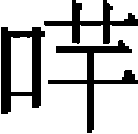
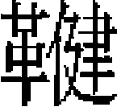

《新元史考證》整理説明
柯劭忞《新元史考證》五十八卷，民國十六年國立北京大學研究院文史部鉛印本。原本有雙行小字夾注，注明「句」、「闕」等情形，此次整理均改爲單行夾注。原本中又偶有訛字、缺字、誤倒，此次整理均予改正，正字用方括號［ ］標出，同時用圓括號（ ）標出誤字。如原本《楊惟忠傳》，「楊惟忠」當作「楊惟中」，即整理作「《楊惟［中］（忠）傳》」。
考證一 卷一 本紀第一 序紀
據《元秘史》、洪侍郎《元史譯文證補》。以後省稱《譯史》。凡卷内用《秘史》、《異史》之文，俱不標出處，惟標其事有異同者，他仿此。
蒙古之先出於突厥 《譯史》：「自東突而屈各族以及蒙兀爾。」洪侍郎曰：「突而屈爲突厥之本音。西域史列蒙古於突厥族類中，從其朔也。」劭忞案：孟珙《蒙韃備録》謂蒙古出於沙陀别種，正與西域史合。《蒙古源流》謂爲吐蕃贊博之季子，無稽之説，不足據也。黄東發《古今紀要逸編》謂韃靼與女真同種，亦非。《譯史》：「太祖攻撒馬兒罕突而屈兵，自以與蒙古同種，開門出降。」尤爲蒙古出於突厥之確證。
蒙古哩 據《契丹國志》。
「有黑達達」至「計牙特博兒濟錦」 據《蒙古部族考》。按拉施特分黑達達、白達達、野達達三部種，最爲詳晰，實他書所未及。《部族考》，《譯史》有目無篇，劭忞據未譯本輯補。
本稱蒙兀爾 《舊唐書·室韋傳》有蒙兀室韋，即《大金國志》之朦骨子，爲契丹之種類，與達達異族，洪侍郎誤合爲一。
博兒濟錦氏 據《蒙古部族考》，與《蒙古源流》正合。《秘史》與《譯史》均作孛兒只斤，下文又作孛兒只吉歹，皆一音之轉，譯音無定字也。
亦譯爲卻特 據《蒙古源流》。
孛爾帖赤那豁阿馬闌勒 據《蒙古秘史》。《譯史》作孛兒特郭斡馬特兒。按《秘史》譯爲狼鹿相配生人，《部族考》亦有此言，拉施特述太祖先世之事獨不取之，以爲夫婦二人之名，真可謂信史矣。
斡難河源不兒罕山 今爲敖嫩河必兒喀嶺。李侍郎《秘史注》以八剌合黑河爲不兒罕山所出之河，名不兒罕河，傅主事學濬駁之，以爲臆改不根之名，懸擬古地是也。
巴塔赤罕 《譯史》作必特赤汗。《蒙古源流》作必塔察汗。劭忞案：《秘史》譯音較審，今從之，下文仿此。
塔馬察 《譯史》作特馬徹，《蒙古源流》作特墨撤克。
豁里察兒蔑兒干 《蒙古源流》作和哩察爾。洪侍郎曰：西書譯爲乞楚，誤。
阿兀站孛羅温阿 《譯史》作古津博郭羅兒，《蒙古源流》作阿固濟木博郭羅勒。
撒里合察兀 《蒙古源流》作薩里噶勒濟固。
也客你敦 《譯史》同，《蒙古源流》作尼格尼敦。
撏鎖赤 《譯史》作珊鎖赤，《蒙古源流》作薩木蘇齊。
哈兒出 《譯史》、《蒙古源流》均作哈里哈爾楚，《譯史》哈里哈生朵奔巴延，較《秘史》、《蒙古源流》少二代。洪侍郎曰：多桑書亦引《蒙古源流》以證異説。阿卜而嘎之書則哈里哈之下又多四代，尤不可解。劭忞案：蒙古世系，《譯史》、《蒙古源流》與《秘史》互有異同，今從《秘史》。
孛兒只吉歹蔑兒干 《蒙古源流》作博爾濟吉台墨爾根。劭忞案：即博兒濟錦之異譯。
忙豁勒真豁阿 《蒙古源流》作蒙郭勒真斡哈屯。
脱羅豁勒真伯顔 《蒙古源流》作都喇勒津巴延。
孛羅黑臣豁阿 《蒙古源流》作博囉克沁郭斡哈屯。
都蛙鎖豁兒 《蒙古源流》作多斡索和爾。劭忞案：《秘史》稱鎖豁兒額上生一目，語殊詭誕，蓋因鎖豁兒譯義爲一目，而演此妄説耳，今不取。
多奔蔑兒干 《舊史》作脱奔

哩犍，《蒙古源流》作多博墨爾根。阿蘭豁阿 《舊史》作阿蘭果火，《譯史》作阿蘭郭斡，《蒙古源流》作阿掄郭斡，譯義美女也。
生三子 《舊史》作二子，誤。
秃馬敦 亦作秃馬惕，又作土馬特，白達達十五部之一。
豁里剌兒台 《蒙古源流》作郭哩岱。
夜有白光 《舊史》作夢白光自天窗入，《蒙古源流》同，《秘史》、《譯史》則云見有白光，今從之。
衆疑之 據《譯史》。《秘史》作阿蘭豁阿告其子之言，日本田中萃一郎《蒙古史》作朵奔之父母詰之，《蒙古源流》則謂告其妯娌侍婢等。
不忽合塔吉不合秃撒勒只 《譯史》作不袞哈塔吉不固撒兒只，《蒙古源流》作布固哈塔吉博克多薩勒濟固。
多兒勒斤 即塔立斤。
乘一青白馬 《蒙古源流》作貉皮馬，《秘史》作短脊黑青馬。
黄鷹搏雉 《蒙古源流》作青色鷹攫野鴨。
阿勒敦阿剌 《舊史》作八里屯阿剌。李侍郎曰：《西域水道記》回語下山出口曰阿剌。阿剌，山口也。日本那珂通世《成吉思汗實録》譯阿剌爲河中島。按《蒙古源流》作獨向鄂諾江東去，則那珂通世之譯得之。
鄂郭爾察克部 據《蒙古源流》。
把林失亦剌秃合必赤 《舊史》作八林昔里秃合必畜，畜乃赤字之誤。劭忞案：《譯史》孛端察兒二子，長布格，次布克台，布格子土敦邁寜。《蒙古源流》孛端察兒既娶布丹哈屯將伊子名爲巴噶哩台之後哈必齊，哈必齊之子名伯格爾巴圖爾，伯格爾之子名馬哈圖丹，均與《秘史》不合，今從《秘史》。又《蒙古源流》將伊子名爲巴噶哩台之後裔，語不可解，審爲翻譯之誤。洪侍郎據多桑引《蒙古源流》，孛端察兒生三子曰巴噶哩台，曰亦察郭兒圖，曰哈必齊，文義較順，或不誤也。
蔑年土敦 《舊史》作撚篤敦，《譯史》作土敦邁寜，《蒙古源流》作馬哈圖丹。
那莫倫 《舊史》作拏倫，《譯史》作莫奴倫，《秘史》以那莫倫爲蔑年土敦子，合赤曲魯之妻，誤也。《舊史》與《譯史》均以那莫倫爲蔑年土敦之妻，情事較合，從之。
與契丹相拒 《蒙古史》作金軍，誤。
生七子 《舊史》同，《譯史》作九子。
匿於酒甕中 據《部族考》。拉施特書又云匿於積薪之下，《蒙古史》譯多桑書亦云乳母機智，匿海都於薪材處。
巴兒忽真土窟姆 《舊史》作八剌合黑河。傅主事曰：即俄羅斯境拜噶勒湖之巴爾古精。
伯升豁兒多黑申 《舊史》作拜姓忽兒，《蒙古源流》作星和爾多克新，《譯史》作拜桑克兒。
屯必乃薛禪 《舊史》作敦必乃，《蒙古源流》作托不巴該，《譯史》作托邁乃。
生九子 據《譯史》，《秘史》則云二子，《舊史·世系表》作六子。《譯史》屯必乃諸子之後，《秘史》皆屬於蔑年土敦之子，殊誤。塔塔兒之難，蔑年土敦惟餘一孫及幼子納臣，《秘史》之誤明矣。
合不勒 《舊史》作葛不律，《蒙古源流》作哈布勒。《大金國志》：皇統七年蒙古敖羅孛極至，自稱祖元皇帝。那珂通世《成吉思汗實録》注：敖羅即合不勒。劭忞案：祖元皇帝乃附會之説，當日無此事也。
合丹把阿秃兒 《舊史·世系表》作合丹八都兒，《秘史》作合答可，今從《譯史》。把阿秃兒即拔都勇士稱。
嫁女於塔塔兒 據《秘史》。《譯史》則云娶婦。
布勒格赤 《秘史》作八剌合赤。《譯史》俺巴該使告金主，《秘史》則云使歸告忽圖剌。按俺巴該被執，忽圖剌尚未爲汗，不應獨告忽圖剌，今從《譯史》。
金熙宗皇統七年 洪侍郎曰：多桑書在西曆一千一百四十七年，《續綱目》據《大金國志》所紀在金熙宗皇統七年，與西史正合。
金大定間童謠 據《蒙韃備録》。
阿勒壇 《舊史》作按彈。
把兒壇 《舊史》作八里丹，《蒙古源流》作巴爾達。按把兒壇、也速該，《秘史》均稱拔阿秃克，不嗣汗位，《舊史》誤。
也速該 《蒙古源流》作也蘇凱。
「部衆議立汗」至「屢爲泰兀赤部所困」 據拉施特書，爲洪侍郎所未取者。按也速該爲罕，《譯史》未載其事，拉施特詳加辨證云：忽都剌死後，他之姪也速該爲汗爲是，亦屬懸揣之詞。《蒙古史》謂烈祖爲尼倫族長，最合情事。《秘史》稱烈祖爲把阿秃兒，無汗號也。
揑坤太子 《譯史》作太石，《世系表》作聶昆太司，《蒙古源流》作訥袞泰實。
蒙力克 《蒙古源流》作莽古里克。
太祖年九年 《秘史》作九歲，《譯史》作十三歲。
考證二 卷二 本紀第二 太祖上
據《元秘史》、《譯史》。按《秘史》紀太祖攻討諸部年分，多前後訛舛，《譯史》較爲可據，今從之。
訶額倫 《舊史》從《親征録》作月倫，《譯史》作諤倫額格，《蒙古源流》作烏格楞，今從《秘史》。
帖木真兀格 《親征録》作帖木真斡怯。
迭里温孛勒答黑 據《秘史》。《譯史》作迭温布兒答克之地，《親征録》作迭里温盤陀孛勒答黑，譯言邱陵也。洪侍郎曰：俄羅斯人訪其地，在斡難河右岸，今地名如故。
宣懿皇后 按世祖至元二年，命平章趙璧等製尊諡廟號，烈祖神元皇帝，宣懿皇后爲第一室，是追諡訶額倫爲皇后，無太后之稱，《舊史》稱爲宣懿太后，殊乖典要。今改正。
是歲爲乙亥 案楊維楨《正統辨》，謂宋祖生於丁亥，我太祖之降年與宋祖同。維楨此文上於史館，以本朝人述太祖之生年，必無訛謬，此最爲確據。《舊史》本紀據《親征録》太祖丁亥崩、年六十六逆推之，當生於壬午，不可從。
脱端火兒真 《秘史》作脱朵延吉兒帖。洪侍郎曰：下三字音未確。今從《譯史》、《親征録》。
秃克 譯言旄纛。
察剌合 《舊史》、《親征録》作察剌海，《譯史》作察勒哈額不干。
腦中流矢 據《譯史》。《秘史》則云中槍。
合剌只魯格山青海子 《秘史》又作合剌主魯格地闊闊納浯兒海子。
脱里脱阿答亦兒兀孫 《譯史》作托克塔帶亦兒兀阿，《親征録》脱黑脱阿作脱脱。
駙馬孛圖 《舊史》有傳，《秘史》作不圖，《譯史》作孛徒。
請帝稱罕 此與丙寅年即皇帝位、共上尊號爲成吉斯罕爲二事，《秘史》此處即稱成吉思罕，固誤，洪侍郎並以稱汗爲妄，亦非。
皆汝等之離間 按阿勒壇二人離間札木合，其事不見《秘史》，或阿勒壇等棄札木合而歸太祖，故札木合疑其離間耳。阿勒壇、忽察兒雖前後反覆，然實有擁戴之功，殆猶鄭譯之附楊堅矣。
札木合弟紿察兒 《親征録》作札木合部人秃台察兒，《譯史》亦作部人紿古察兒。按僅殺其部人札木合，不至糾衆來攻，今從《秘史》。
斡列該不剌合 《譯史》作烏拉該布拉克，蒙古謂泉曰布拉克，《秘史》之布拉合即布拉克，《親征録》作玉律哥泉，可證。
答兒馬剌 《譯史》作拙赤塔兒蔑勒，《親征録》作搠只。
巴魯剌思人木勒客脱塔黑 據《譯史》。《秘史》不云揑坤所遣，又作亦乞别思人，其名則作木勒客脱塔里（句）。孛羅勒歹，《親征録》作卜奕台慕哥。其云揑坤所遣，則與《譯史》同。何主事改《親征録》「揑辟」爲「揑群」，不知乃「坤」字之誤。
答蘭巴勒主惕 《親征録》作答蘭版朱思。
帝與宣懿皇后爲第一翼 按十三翼，《譯史》所載最爲詳明，《親征録》人名多譌字，今不取。
軍失利 《譯史》、《親征録》皆謂太祖勝，爲帝諱敗也。《秘史》獨得其實。《舊史》以此戰爲太祖沖年之事，尤誤。
哲别納牙來降 《秘史》在塔兒忽台等被誅後，今從《譯史》。
照烈 《譯史》作朱里。
哲兒們山 《親征録》作斡斡札勒馬思之野。
異日汝兵車所至 據《親征録》。
烏魯克塔海答魯 烏魯，《親征録》作玉律。
爲泰亦兀赤所殺 《親征録》作爲族人忽敦忽兒章所殺，即泰亦兀赤人也。西史爲蔑兒乞人所殺，誤。
察罕忽失亦文秣驪 據《譯史》哲别補傳。
主兒乞 《親征録》、《譯史》均作月兒斤，即主兒乞之異譯。
蔑古真薛兀勒圖 《譯史》作摩勒蘇里圖，《親征録》作兀真笑里徒。
札兀惕忽里 據《蒙文秘史》。《親征録》作察兀忽魯，《譯史》作察兀特忽里，《成吉思汗實録》譯爲百户長，《蒙古史》譯爲大將軍之義，《親征録》原注 若金招討使。今從那珂通世譯義。
帖列格秃之隘 《親征録》作帖列徒，《成吉思汗實録》引俄羅斯地圖作祖里格秃，爲車臣汗牧地。
帝大怒 《親征録》謂帝麾下爲乃蠻所掠，徵兵起衅，《秘史》謂老營被掠起衅，與《譯史》均不合。今分著於紀傳，以附傳疑之義。
完顔襄討塔塔兒 洪侍郎曰：襄討塔塔兒，以《金史》紀傳考之，是丙辰年事。案《大金國志》塔塔兒寇邊事在甲寅年，未可執《金史》以訂西書之誤。
額兒克合剌 《親征録》作也力克合剌。
王罕奔西遼 《秘史》載此事於辛酉，誤。
古薛兀兒海子 《親征録》作曲薛兀兒汗，《譯史》作庫思克兒淖爾。洪侍郎曰：當在克魯倫河南或在西。
宴於土兀拉河 《譯史》作宴於河上，注：多桑謂是土拉河。與《親征録》、《秘史》合。
塔海速客該 《譯史》作秃該蘇該，《親征録》作雪也該。
霍拉思布拉思之地 《親征録》作發兵哈喇哈河。
乞失泐巴失海 徐星伯《西域水道記》即噶勒札爾巴什淖爾，《親征録》作黑辛八失之地，乃乞失泐巴失之異譯。
謙謙州 《譯史》作侃侃助特。
可克薛古撒卜剌黑 《親征録》誤作二人。
巴亦答剌黑之地 洪侍郎引拉施特説，昔乃蠻主娶汪古部女拜答剌黑，結婚於巴勒赤列之地，蒙古遂並人名地名爲稱，或僅稱拜答剌黑。
王罕至土兀剌河 據《親征録》。《譯史》作塔塔兒土霍勒。洪侍郎曰：恐《譯史》誤。
金們呼兒 譯言大杯。
再伐乃蠻 據《親征録》。此事《譯史》、《秘史》均無之。
不魯古厓 《親征録》「古」字誤作「告」，今改正。
捕魚兒海子 《親征録》：作盃亦烈川。
徹徹兒山 《譯史》作察哈察兒。
又敗塔塔兒酋 《譯史》作蔑兒乞泰兀赤酋，誤。
泰亦赤兀酋盎庫庫楚等會於斡難河 按《秘史》此役在札木合稱汗之後，今從《譯史》。盎庫庫楚，《秘史》作阿兀出。
斬牛馬爲誓 《親征録》作斬白馬，《譯史》殺牛一、羊一、馬一。按《秘史》無此事，其後叙立札木合爲汗事亦多舛略。《譯史》叙次與《親征録》事事符合，今從之。
特因 《親征録》作迭夷。
刊河 《親征録》作犍河，《秘史》作刊沐漣河。按沐漣，蒙古語河也。
戰於海拉兒帖尼河 《秘史》誤以此戰爲闊亦田戰，今從《譯史》。
火力台 據《譯史》。《舊史·抄吾兀傳》及《親征録》載此事均與《譯史》不合，今《紀》、《傳》兩存其事。
卯温赤敦山 洪侍郎曰：即《舊史》之阿蘭塞。
桑昆 《親征録》作亦剌哈，《譯史》作鮮昆。
察罕塔塔兒按赤塔塔兒二部 《秘史》作四部察罕作察合安。
奎騰之地 蒙古語冷也。
札木合掠諸部而去 《譯史》繼乃歸於帝，殊誤。札木合與帝交已絶，無緣復歸也。此事《親征録》不誤，何主事以爲難解，何也？
阿剌兒 譯言水島。
阿兒郤宏哥兒之地 《親征録》作阿不禮闕忒哥兒。洪侍郎引多桑書，在沙漠中，離哈喇温赤敦不遠。《蒙古史》宏哥兒湖在阿兒郤山發源，故兩名合稱。
桑昆僞許婚 《親征録》作王罕事。
蒙力克 《親征録》作蔑里哥，《秘史》、蒙文《譯史》均作蒙力克額赤格。蒙古語額赤格，父也。
巴歹 《親征録》作把帶，《舊史·木華黎傳》作拔台。
卯温都山 《親征録》作莫運都兒山，張明經《蒙古遊牧記》：克什克騰旗西南有漠海恩都爾山，即此山。卯，蒙古語不好也。温都爾，蒙古語高也。
巴兒渚納 《親征録》作班朱尼河，《秘史》作巴兒渚納納兀兒。
飲水誓衆 《親征録》班朱尼飲水在遣使後，《譯史》在遣使前，今從《譯史》。
帖兒格阿蔑勒 《親征録》作帖木真阿亦。
阿剌忽思的斤忽里 《蒙古史》：阿剌忽思本名的斤。忽里，部長之稱。
斡兒訥兀山 《親征録》作建忒該山，《秘史》作客勒帖該合答，譯義爲山之半崖，非山名。
甲子春正月禡牙 據《譯史》。洪侍郎曰：哀忒蠻謂回回曆六月十五日，西曆則在二月十九日，中西曆相差至多四十餘日，至少十餘日，當爲中曆正月望日。《秘史》四月之説不足憑。
再議進兵 《秘史》誤二役爲一。
杭海山之哈兒只兀孫河 《秘史》作康合兒山，《譯史》作阿勒台河與杭海山之間。今據《親征録》。
古出魯克 《親征録》作屈出律。
乞鄰古散城 《親征録》作塔思城。
札木合伏誅 《秘史》云：今札木合不出血而死，仍厚葬之。西書則云截其手足而死，未詳孰是。恐《秘史》非實録也。
考證三 卷三 本紀第三 太祖下
元年 《黑韃事略》：韃之本俗只是草青則爲一年，人問其庚甲若干，則倒指而數幾青草。那珂通世謂太祖建元爲世祖時所追定，是也。
建九斿白纛 洪侍郎曰：以白馬尾九爲旄纛，非旗也。《蒙古源流》作九烏爾魯克。
成吉思合罕 據蒙文《秘史》。《蒙古源流》作青吉斯。云有鳥，鳴聲似青吉斯，集方石，於石中得玉印。按《蒙古源流》多誣誕之辭，今不取。又《秘史》太祖與札木合分營後即已稱成吉斯罕，亦誤。蓋此時雖稱罕，乃一部之長，至丙寅，群臣始共上成吉思之號也。錢詹事謂先稱罕、後稱皇帝，未確。
古兒汗 又作局兒罕，譯義衆罕之長。日本田中萃一郎《蒙古史》：蒙古語古兒，總體之義。
國語成爲氣力强國吉思爲多數 洪侍郎曰：西人薈萃衆書，以考成吉思稱名之義。一曰：成，大也；吉思，最大也。一曰：即天子之義。别有蒙古人云：即位時有孔雀飛至，振翅有聲，似「成吉思」，遂以爲罕號。拉施特修史有譯義，則云：「成」爲氣力强固，「吉思」爲多數。拉施特親見國史，其言宜可信也。按《蒙古史》：「成」，蒙古語强健；「吉思」，複數之詞，正與拉施特之譯義合。有元一代有天生氣力的皇帝之稱，即沿此而起。
札兒忽 《百官志》作札魯忽赤。
入兀剌海城 兀剌海，唐古特語萬里長城也。《舊史》作斡羅孩，下文作兀剌海斡羅孩，乃兀剌海之異譯。蒙古伐西夏，再入長城，非一事兩書，特《舊史》不知斡羅孩即兀剌海耳。《譯史》作威剌哈。
阿勒壇布剌 《親征録》作按彈不兀剌。
「斡亦剌部長」至「望風納款」 洪侍郎《譯史》注：《本紀》斡亦剌之降在三年，乞力吉思之附在二年。考之西圖，應從《秘史》。先定斡亦剌東，由而西，軍程乃合。劭忞案：洪説得之，惟太祖遣使諭乞兒吉思，與朮赤之受降當爲二事。
也迪亦納勒（句）。阿勒迪額兒 《舊史·本紀》作野牒亦納里阿里替也兒。《親征録》作斡羅思亦難阿忒里剌。此人名，《舊史》誤爲部名。
皇子朮赤征和林西北部族 《親征録》事在十一年戊寅，與《譯史》、《秘史》不合。
「失必兒」至「塔思巴只吉」 據《譯史·朮赤補傳》及那珂通世書。
以斡亦特部長爲嚮導 據《譯史·朮赤補傳》。《舊史·本紀》作斡亦剌遇我前鋒，不戰而降，《譯史·太祖本紀》同，與《朮赤傳》牴牾。按《舊史》依《親征録》，以朮赤北征斡亦剌降附爲十一年事也，今從《秘史》，以北征爲二年事。斡亦剌爲嚮導，則從《朮赤補傳》。斡亦剌，《譯史》作衛拉特。
斡列别克的斤 據《成吉思汗實録》，與《朮赤補傳》合。《譯史·太祖本紀》：先至一部受降，又至一部。野牒鄂倫酋曰斡羅思亦納兒，與《朮赤傳》及《秘史》、《親征録》皆不合，今不取。
直魯古以女妻之 洪侍郎曰：拉施特謂古兒汗以女嫁古出魯克，他書有謂孫女者。哀忒蠻譯乃是外孫女，恐譯誤。
真河 《親征録》作嶄河，《秘史》作垂河，《舊史·速不台傳》作蟾河，又作檐河。
阿惕乞剌黑（句）、答兒伯 《譯史》作阿勒潑魚土克迭兒拜，《録》作柯力也奴奴答拜，又作安魯不也女答兒班。
「遠辱天使」至「犬馬之勞」 據《親征録》。
賜大紅衣金帶 據《成吉思罕實録》。
水決壞其堤 據拉施特書，正與《舊史》合。
再伐西夏 《親征録》事在庚午，《大金國志》、《西夏書事》均在辛未。按太祖午未二年方用兵伐金，不應再有事於西夏，今從《舊史》。又《西夏書事》戰敗失其公主，《舊史》則云納女，未詳孰是。
「分屯山後」至「與金絶」 據《兩朝綱目備要》。
「納哈買」至「始釋之」 據《續通鑑綱目》。拉施特書亦有此人，作阿哈塔買住。《綱目》釋買住在六年四月，按太祖五年已與金絶，則買住之言驗矣，豈有遲至明年而始釋之？今改正。
阿勒敦 《録》作也立可敦。
哈剌魯 《譯史》作柯耳魯克。
粘合合達求和 據《續綱目》。
獨吉千家奴完顔胡沙 《金史》作獨吉思忠完顔承裕。
帝解衣置帶於頂 據《親征録》。按太祖伐金歲月，以耶律楚材進《庚午歷元表》「歲在庚午，決志南征，辛未之春，天兵南渡」之言爲确證。《親征録》秋上始南征，《金史·衛紹王紀》又載於四月，均誤。
復拔烏沙堡 《舊史》此年二月有敗金於野狐嶺之事，又以敗金於貛兒觜皆爲壬申年事，分野狐嶺、貛兒觜爲二役，又誤移辛未於壬申年。按烏沙堡在野狐嶺之北廢興和城，元兵安能先攻野狐嶺、後至烏沙堡乎？又元兵兩攻烏沙堡，一爲庚午，一爲辛未，《親征録》及《金史》獨吉思忠諸傳俱云辛未取烏沙堡，略庚午之役不書。那珂通世遂謂庚午取烏沙堡爲《舊史》之誤載，亦非。
「克烏沙堡」至「圍西京凡七日」 據薛應旂《宋元通鑑》。
會河堡 《譯史》作會河堡，《大金國志》作灰河，爲七月事。
九月完顔胡沙遁 據《金史》本紀。
閏九月進克宣德州 據《親征録》。
入居庸關 《兩朝綱目備要》、《宋史全文》均作七年事，誤。
糺軍來援 據《大金國志》。
哲别克東京 《秘史》作東昌，譯者之誤。那珂通世疑爲東勝。按六年朮赤等已克東勝，則東勝非堅城可知，何至難以衆克、必俟用計取之？今不取。《金史》本紀大安三年大元已定桓、昌、撫三州，徒單鎰請置行省於東京備不虞，帝不悦，未幾東京果陷，可爲哲别取東京之確證。又《譯史》係此事於庚午，亦誤。
喀台布札 《舊紀》作可忒薄剎，《録》作怯台薄察喀台，即九十五千户内之客台布札，即八札，見《趙柔傳》。
繞出紫荆關 據《親征録》。
乃徹圍 《舊史》此下有九月察罕克奉聖州一事，按德興府遼爲奉聖州，金人陞爲府，改名，八年帝尚圍德興府，乃前一年已爲察罕所克，無此事決矣！今不取。
哈台 即九十五千户内之合歹。
遣乙里只入城 據《金史·宣宗本紀》。
寅答虎 《舊史》作寅答虎烏古倫。烏古倫，寅答虎之氏也，《舊史》誤倒。《東平王世家》正作烏古倫寅答虎。
乙里只諭金主 據《金史·宣宗紀》，在二月，且有辛丑勅宰臣燕乙里只之事，《舊史》本紀誤爲七月。
十二月張鯨伏誅，鯨弟致叛 據《木華黎傳》，《舊史·本紀》誤爲四月事。
高琪拒戰，敗之，進至居庸北口 《舊史》誤作古北口，《譯史》亦誤，《親征録》可證。又《舊史》有大兵趨涿鹿、忽沙虎敗遁之事，按《金史》忽沙虎未嘗守涿鹿，李廣文《金史紀事本末》謂因高琪之敗而誤，得之。
循太行而南 《親征録》蒙古三道所取州郡與《舊史》不合，今從《舊史》。
駐蹕中都北郊 據《親征録》。
金粘罕營中都城 據《南遷録》。蒙古攻城事，《大金國志》所載亦略同。
圍太原府 據《宣宗紀》。
張開復取河間 同上。
「撒木合趨關中」至「圍平陽府」 據《金史·宣宗本紀》。按撒木合伐金之役，《金史》最爲詳核，可據。《譯史》載撒木合攻西京事，誤甚。西京久爲蒙古所有，安有遲至丙午年撒木合始取之耶？畢尚書《續資治通鑑》、何主事斠《親征録》，俱云蒙古兩由西夏入關中，亦誤。
耶律六哥 李齊賢《高麗世家》作金山王子，當是六哥僭號。《東國通鑑》作捨王子。
札剌 《舊史》作禮剌。
「趙冲以兵來會」至「百餘人」 據《高麗世家》。《東國通鑑》以克江東城爲十四年正月事。
木華黎圍北京 《譯史》誤作西京，守將又誤爲撒木合事。洪侍郎據《譯史》以改定《親征録》，非是。史秉直九年從木華黎攻北京，又史進道從木華黎圍北京，十年城降，均可證也。
自稱大真國 《舊史》僭號東夏，「夏」乃「真」字之誤。
木華黎覲帝於土拉河 據拉施特書。此事《譯史》所無。
速不台討蔑兒克 《秘史》以爲乙丑年事，誤。河，《譯史》作真河，《親征録》作嶄河，《速不台［傳］》作蟾河。
忽都赤剌温奔欽察 《譯史》有呼圖罕蔑兒根被殺之事。呼圖、忽都一音，無兄弟同名之理，恐《譯史》有誤。
察罕敗金將 《大金國志》謂元人患苗仙、郭忠元等聚兵，言於金，遣夾谷討之，仲元賜死，軍遂潰散，北軍歸。按金人雖愚，不至自戮其將以縱敵。《大金國志》多誣妄之詞，不足信也。
歹都忽勒莎豁兒 據《成吉思實録》。西書又作塔秃剌克速喀兒，《親征録》作都剌莎合兒，李注《秘史》本漏「莎豁兒」三字。
張柔擊敗之 《舊史》此下有伐西夏一事。按《秘史》，帝將伐回回國，徵兵於西夏，西夏阿沙敢不語不遜，太祖怒，謂回來時卻定征他。是此年並未出師，《舊史》此條實爲虚造。
以木華黎爲太師 《譯史》、《親征録》均爲戊寅事，《舊史》作丁丑事，今從《舊史》。《秘史》以封國王爲元年事，尤誤。
「金中山府」至「以城降」 據《史天倪傳》。《金史·宣宗紀》元兵徇中山，下磁州，正與《傳》合。
木華黎率步騎數萬自太和嶺［徇］河東 《金史·宣宗本紀》。
十四年己卯會師於也兒石的河 據《譯史·西域補傳》。《舊史》耶律楚材傳己卯夏六月帝親征回回國，駐也兒石的河，正與《西域補傳》合。《譯史·太祖本紀》以馳也兒石的河爲十五年，與《親征録》同，非是。也兒石的河即今之額爾齊斯河。
貨勒自彌蘇而灘 亦作貨勒自彌沙蘇爾灘，譯言皇帝，即《舊史》之算端沙，譯言部長也。貨勒自彌，蒙古謂之烏爾

赤，又作花拉子模，本城名。其酋滅賽而克之蘇爾灘而代之，詳《貨勒自彌傳》。《舊史》謂之回回國，又謂之西域，魏源《元史新編》則誤爲西遼。阿力麻里 洪侍郎曰即伊犂，《西游録》作阿里馬，西史作阿而麻力。
波合拉 即《秘史》之兀忽納。《秘史》爲其殺使臣兀忽納等百人，則誤合遣畏兀兒人與波合拉爲一事。
訛脱剌兒城 《舊史》據《親征録》作訛答剌。
伊那兒只克 據《西域補傳》。《譯史·本紀》作哈伊兒汗，《舊史》作哈只兒蘭秃。
岱爾巴圖 《譯史·本紀》作塔亦兒把阿秃兒。
夏五月進至撒馬爾干 據《西域補傳》。《譯史·本紀》則云春征撒馬兒干，《本紀》誤並十四年事於十五年，歲月均舛誤不可據，今不從。
「春張柔」至「三十餘城悉降」 據《續通鑑綱目》。惟《綱目》作五月事則誤。
布哈爾 《舊史》作蒲華城。撒馬爾干，《舊史》作尋斯干，又作薛米斯干，又云駐蹕也的石河。洪侍郎曰：也的石河必也兒的石河之誤，在尋斯干東北數千里。此是十四年事，《元史》誤從《親征録》，遺脱己卯而從庚辰年起，此後編年紀事遂盡移下一年。
康里兵波斯兵 據《譯史》引志費尼書。按《譯史》康里自以與蒙古同類，無鬥志。康里，突而克種，蒙古出於突厥，突而克即突厥之異譯，故云同類。
蘇爾灘母土而堪被獲 《譯史·西域補傳》序在蘇爾灘卒之後，誤甚。《本紀譯證》：蘇爾灘聞妻女被獲，幼子已飲刃，旋卒。可爲的證。
十二月蘇爾灘心悸而卒 洪侍郎曰：他西書考得王卒爲西一千二百二十一年正月十一日，合之中歷爲十五年十二月間。《耶律楚材傳》：庚辰冬大雨雪，楚材曰：回回主當死於野。時序正合。《舊史》繫之壬午，誤。
金主使烏庫里慶端 據《金史·本紀》。《舊史》係於十七年。按是年九月、十月，帝兩遣使於金，均見《金史·本紀》，則此事在十五年明矣。
渴石 即《西游記》之碣石。莫圖克堪 又作莫圖根。
巴而黑 《舊史》作班勒紇。
塔里堪山 《舊史》作塔里寒。
札拉勒丁 又作只拉兒哀丁，《親征録》作札蘭丁。
阿敏瑪里克 阿敏，名也；瑪克里爲王爵之稱。《舊史》作滅里而，即瑪里克，惟不應加「汗」字耳。
帝欲從印度經唐古特而歸 《親征録》繫於十九年甲申，《譯史·太祖本紀》繫於十八年癸未，均誤。《西游記》長春於壬午四月還自欣都庳施山中行在所，五月五日達邪米斯干，八月十五日渡（河）［阿］母河，二十二日至行宫見上，二十七日車駕北回，年月最確，可證諸書之誤。
巴魯俺 《譯史》又作八米俺，又作巴蠻，《親征録》作八魯灣。
或曰左右見一角獸 《舊史》：帝至東印度，有一角獸作人言。帝問耶律楚材，對曰其名角端云云。蓋據宋子貞所作《耶律楚材神道碑》。按太祖西征，未至東印度，楚材亦未從行。考《湛然居士集》楚材在西域惟及尋斯干，未嘗出鐵門也，何由與太祖問答，其爲虚罔顯然。惟「角端」雖非實事，元人皆侈爲奇瑞，今仍書之，以附傳疑之義。
「十八年春駐蹕赤兒赤克」至「不出獵」 據《西游記》。
十九年夏駐蹕阿勒馬克城 據《西游記》。
皇孫忽必烈旭烈兀來迎 《太祖本紀譯證》：時忽必烈十一歲。按世祖生於太祖十年乙亥，十一歲當爲乙酉年事。蓋甲申冬來迎，乙酉春從太祖東歸耳。
乙酉春帝至和林行宫 《秘史》作乙酉秋，《舊史》作春二月，《親征録》、《譯史·太祖本紀》均作乙酉春。那珂通世疑《秘史》過遲，是也。
分封諸子 多桑書但言太祖東歸，定諸子封地。那珂通世叙於還行宫之後，今從之。那珂通世曰：拖雷得蒙古地，窩闊台得乃蠻故地，察合台得西遼故地，朮赤得貨勒自彌康里乞卜察克故地。
西夏主陰合漠北諸部爲拒守計 據《西夏書事》。《舊史》謂西夏納仇人翔昆帝，遂自將伐之。此事已二十餘年，不應今始尋仇，《舊史》誤也。
十一月帝駐蹕畏兀兒 據《湛然居士集·辨邪論》。
西夏率兵來援 《舊史》作嵬名令公，今從《譯史》。
「貢金佛」至「九九之數」 據《成吉思汗實録》。
孛魯遣李喜孫 據《木華黎傳》。《舊史》是年有李全來降一事，按全降在丁亥四月，《舊史》誤。
李睍率五十營來援 《舊史》作遣嵬名令公來援。
五月克臨洮府 《舊史》作二月，誤，今從《金史》改正。臨洮府，金地，非西夏地。
壬午帝疾甚 按《秘史》。帝於阿兒不合之地出獵，墜馬致傷。李侍郎注據《西游記》證爲十八年二月事，是也。《秘史》紀事得之傳聞，今不取。
己丑崩 《舊史》在七月，《譯史》則在八月。洪侍郎曰當依《舊史》，中西歷法不同，易於舛誤。
臨崩 《秘史》謂西夏主來朝，帝殺之，在未崩之前。《蒙古源流》又謂太祖納西夏之后致疾，皆失實，今不取。
年七十有三 《舊史》作六十六，誤甚。詳見洪侍郎《太祖年壽考》。
考證四 卷四 本紀第四 太宗
窩闊台 《秘史》作斡哥歹。
朮赤察合台攻烏爾赤至班師 據《譯史》。
皇弟拖雷監國，帝留於霍博之地 《舊紀》作自霍博之地來會葬。那珂通世謂太祖崩時，太宗從軍居左右，葬畢始還霍博之地，《舊紀》誤。案那珂君糾《舊紀》會葬之誤，是也。惟據多桑之説，謂葬後皇子諸王各還分地，拖雷攝國事。考之拉施特書，既無確證，揆之當時情事，亦有不合。太宗已奉太祖之命爲嗣矣，何必再還分地，俟諸王百官總會於大斡兒朵然後即位乎？按《舊史·拖雷傳》，拖雷監國，太宗留於霍博之地，較爲近理。太宗分地在葉密爾河。《耶律希亮傳》：中統二年夏抵葉密里城，冬至火孛之地。火孛即霍博，當亦在太宗分地之内。太祖崩後，拖雷奉梓宫歸葬，太宗自往分地安輯部衆，以國遭大喪，恐新附之地易生變亂也。迨人心大安，始至太祖大斡朵行即位禮，視多桑説較合情事矣。
闊迭額阿剌勒 據《秘史》。《舊紀》、《親征録》作曲雕阿蘭，下文又作庫鐵烏阿剌里，一地誤二，不知爲譯文之異。闊迭額阿剌勒，那珂通世曰客魯連河中州。
木亦堅合罕 據《蒙古部族考》。
「察合台持右手」至「東向拜日」 據《蒙古部族考》。
金主遣完顔麻斤 據《哀宗本紀》。
完顔訥申 據《哀宗本紀》。《舊紀》作阿虎帶，據［《金史》］，阿虎帶爲天興元年之講和使，事在太宗四年，《舊紀》誤。
勅宿衛等依前番直 據《成吉思汗實録》。
復遣完顔訥申 據《哀宗本紀》。
獵於斡兒寒河 《舊紀》此下有遣兵圍京兆、金主率師來援敗之一事。按是時金哀宗在汴，並無自將援京兆之事，不審何以譌誤至此？今删。
盧鼓椎有不遜語 《舊史》本傳譌爲金主之言，今據《金史》改正。又《舊史》速哥使金，金主亦有拒戰之言，亦因此事附會之。
綽馬兒罕討札剌哀丁 據《異史》。
與完顔彝戰於大昌原 《金史·本紀》作正大六年，爲太宗元年。《忠義傳》作正大五年。其時太宗尚未即位，俱不合。《布哈》、《約赫德傳》作七年正月，今從之。《舊紀》：夏，朵忽魯及金兵戰，敗績，時亦誤。
以楊妙真爲山東行省 據《平都州重建真武廟碑記》。
四月克鳳翔府 《舊紀》作二月，今從《金史·哀宗紀》。《舊紀》又云攻洛陽河中，按蒙古未渡河，不能至洛陽，拔河中在十二月，亦非二月事，今並不取。
九月圍河中府 《舊紀》作十月，今從《金史》。
元兵渡漢水 據《金史》。
搠不罕使宋總制張宣殺之 《秘史》作主不罕，謂爲太祖時事。高寶銓《秘史補注》謂金人殺之，諉爲宋殺。按張宣爲宋青野原統制，紹定四年以宣戰青野原有功，授沔州都統，則宣殺蒙古使者爲太宗時事明矣。陳桱誤以宣爲金將，高君從之，尤非。
初皇叔斡赤斤遣著古與使於高麗 據《東國通鑑》。
綽馬兒罕追札拉勒丁 據《譯史》。
「拖雷敗金將完顔兩婁室於襄城」至「援南京」 據《哀宗本紀》。
丙戌帝自河清縣渡河，三日軍畢渡 《舊紀》作戊子，《哀宗紀》作丙戌，蓋丙戌渡河，戊子畢渡。
拖雷使者至 拖雷於三年十二月渡漢江，其使者今始達行在也，《舊紀》誤。
李平降 據《哀宗紀》。
撒里塔班師 據《高麗史》。
金兵不戰而潰 據《哀宗紀》。
以其弟之子曹王訛可爲質 據《哀宗紀》。《舊紀》作金主遣其弟，誤。
「金主遣楊仁乞和」至「詔諭金主」 同上。
金曹王訛可歸 據《哀宗紀》。
高麗叛 《舊紀》云殺所置官吏，《高麗傳》亦云殺達魯花赤七十二人以叛。那珂通世曰：《高麗史》所載，惟有七月王遣尹復昌往北界，奪達魯花赤弓矢，被達魯花赤射殺，及謀殺達魯花赤不成一事，而無盡殺七十二人之事。《高麗傳》載太宗五年詔數高麗王五罪，亦不及此事，其爲妄傳無疑。按那珂君説得之，《舊史》誤采，今不取。
高麗奉表謝罪 據《高麗史》。
「遣王檝使於宋」至「歸河南地」 據《宋季三朝政要》。按《宋史》，是年蒙古再遣使於宋，《舊史》無徵，恐《宋史》誤也。
撒吉思卜華敗白撒 據本傳。《金史·哀宗紀》繫此事於丁巳。
梁王從恪，荆王守純 《舊史》作荆王恪，梁王守純，誤，今從《金史》。
詔諭高麗王 據《高麗傳》。
速不台克洛陽 據《哀宗本紀》。《舊紀》在上年三月。
王檝使於宋 據《哀宗本紀》。
畢賢甫殺鄭毅 據《高麗史》。《東國通鑑》作鄭顗。
承麟爲亂兵所殺 《舊紀》據《親征録》作獲承麟，殺之，今從《金史》。
追殺抹撚兀典 據《哀宗紀》。
武仙奔澤州 據《金史·武仙傳》。
頒大札撒以令於衆 《親征録》作宣布臺章札撒，譯言法令也。《舊史》書於即位之下，殊誤，《親征録》可證。
全子才自合肥趨汴 據《宋季三朝政要》。
宋制置使趙葵陷泗州 據《宋季三朝政要》。
遣王檝使於宋 據《宋史·理宗紀》。
「春帝居永安宫」至「率以爲常」 據《成吉思汗實録》。
居揭揭察哈殿 《舊紀》作迦堅茶寒殿，此以揭揭察哈澤得名。《舊紀》一卷之内既作迦堅茶，又作揭揭察哈，譯字參差，致讀者誤爲二地，今改。
闊闊腦兒 亦曰軍腦兒。闊闊，譯言青，「軍」字疑「庫」字之譌，庫庫、闊闊譯音之轉，《舊史》奪一「庫」字，又訛「庫」爲「軍」。
汪吉河 亦曰翁奇河，耶律鑄《雙溪醉隱集》作旺結河。
「帝以欽察斡羅思諸部」至「皆從行」 據《譯史》。
全子才、劉子澄皆遁 據《宋季三朝政要》。
「敗宋趙范」至「引還」 《三朝政要》繫此事於十一月，《續資治通鑑》作七月，誤。
承制授汪世顯原官 《舊紀》作闊端攻石門，汪世顯降，據世顯本傳書之。按《金史·郭蝦䗫傳》：世顯得蔡州凶聞，即殺金行省粘葛完屠，送款於蒙古，遣使諭郭蝦䗫以禍福，蝦䗫不從。是世顯已早降矣。《元史》本傳乃謂金亡，世顯猶城守，闊端問何爲不降？世顯對以賣國市恩之人，諒所不取，庫端大悦。儼然節義之士，虚誣至此，可爲歎息。蓋採世顯碑狀之諛詞不暇審訂耳，今改正。
三月王旻、李伯淵等以襄陽來附 據《宋史·理宗本紀》。
夏四月曲出克隨、鄧二州 據《宋史·理宗本紀》。
「九月闊端攻武休關」至「斬友聞」 據《宋史》。
冬十月郭蝦䗫自焚死 據《金史·郭蝦䗫傳》。《舊史·按竺邇傳》事在甲午，誤。
速不台討布而嘎而部 據《譯史》。
斡魯朵 即拔都兄鄂爾達，見《譯史》。茶合帶 即察合台。
孛魯古帶 即别里古台。
古與克 即貴由。
果魯干 即闊列堅，拉施特書亦作果爾干。
鍜真 朮赤台孫，本傳作端真。
折那顔 即《食貨志》之折米思卻兒，此與端真、按只那顔、火斜朮思等並屬於（本）［木］華黎，所謂五投下也，故皆於東平府内撥賜。或以折那顔爲折别，失之。
蒙古寒札 疑察罕之誤倒。察罕賜姓蒙古，《元史本證》以蒙古即畏答兒孫忙哥，恐非。
火斜朮思 即《食貨志》之和斜温。
波爾塔斯三部 據《譯史》。
自七歲以上未嫁之女得四千人 據《成吉思實録》引多桑書。
斡赤斤領地 據《秘史》。
宋知安豐軍杜杲 據《宋季三朝政要》。
拔都入斡羅斯 據《秘史》。
闊列堅中流矢卒 據《蒙古部族考》。
拔都克物拉的迷兒城 據《譯史》。
二月遣王檝使於宋，宋通好使周次説來 據《理宗本紀》。
杜杲拒戰，兵失利，引還 據《宋季三朝政要》。
綽馬兒罕再入義拉克 據《譯史》。
孟珙復取信陽軍 據《宋史·孟珙傳》。惟《珙傳》以取信陽、光化與取襄樊爲一年事，《舊史》宋取襄樊在十年，與《宋史》不合，今分年繫之。
冬十一月蒙哥圍蔑怯思城 《譯史》作十一年春。按《舊史·昔里鈐部傳》載此事年月最詳，《譯史》誤也。
塔海與宋兵戰於大埡砦 據《宋史·孟珙傳》。
金降將王榮 據《舊史·［史］天倪傳》。
綽馬兒罕分兵攻角兒只 據《譯史》。
「奥都剌合蠻」至「乃免死」 據《成吉思汗實録》。
拔都遣使奏捷 按《秘史》拔都自乞卜察遣使奏古余克不里，因筵會詈拔都事，斡哥歹大怒，詔古余克拜見責訓，蓋因拔都之奏召古余克還，非定宗已歸。《舊紀》皇子貴由遣使奏捷，即拔都遣使之事。
八月宋余玠以舟抵汴 據《宋史·理宗紀》。
拔都入波蘭馬加 據《譯史》。
「阿拔克入朝」至「不得額外苛斂」 據《譯史》。
拔都等敗波蘭兵（至） 據《譯史》。
田世顯 《舊史》作田顯，今從《宋史》。
敗宋統制王温 同上。
大兵攻叙州 同上。
右丞相鎮海罷 據《譯史·定宗本紀補異》。
克資州 據《宋史》。
「貝住征羅姆」至「開廓蘇納款」 據《譯史》。
「壽春兵掠膠密」至「堅守不下」 據《宋史·理宗紀》。
劉整襲陷鎮平縣 據本傳及《宋史》。
貝住克凱（竦）［辣］脱 據《譯史》。
朕有四功四過 據《秘史》。
朵豁勒 即朵忽魯。
考證五 卷五 本紀第五 定宗
貴由 《秘史》、《譯史》均作古余克，又作庫裕克。古余、庫裕、貴由譯音相近，「克」字蒙古語之尾音。
太宗五年以皇子從按赤帶討蒲鮮萬奴 據《舊史》太宗本紀。《定宗本紀》則云命諸王按只帶伐金帝，以皇子從，虜其親王。誤以討遼東爲伐金之役，今改正。
七年拔都速不台討奇卜察克斡羅思諸部 據《譯史·拔都補傳》。
「太宗以敵據堅城」至「俱從行」 據《秘史》及《拔都補傳》。
帝與蒙哥攻阿速部之蔑怯思城 據《譯史》。《舊史·本紀》作攻圍木栅山寨，即蔑怯思城。
選死士十人躡雲梯而上 據《曷思麥里傳》，《舊史·本紀》作以三十餘人與戰，帝及憲宗與焉，未得其實。
「與拔都大軍會於杜惱河」至「爲後援」 據《拔都補傳》。
春三月太宗凶問至 據《拔都補傳》。
「癸卯諸王斡赤斤」至「引衆還」 據《譯史·定宗憲宗本紀補異》。洪侍郎曰：《耶律楚材傳》事在癸卯夏正，西北軍還之時，時序亦合。薛氏《宋元通鑑》：議立帝，久不決，諸王將謀作亂，會雷雨大作，帳水深數尺，遂各散去。按太宗崩，皇后即議立定宗，無久不決之事，薛氏所言殊乖情實，今不取。
「拔都遷延不行」至「與其子來會」 據《拔都補傳》。
「帝與拔都大宴軍中」至「事始解」 據《秘史》。
諸王忙該及阿勒赤歹、晃豁兒、台掌吉等諫曰 據那珂通世《成吉思汗實録》。《秘史》李注本無晃豁兒、台掌吉二人，又李侍郎以忙該爲蒙哥，尤誤。
「斡羅斯姆」至「宥斡赤斤不問」 據《定宗憲宗本紀補異》。
皇后乃馬真氏崩 同上。《舊史·后妃傳》作至元二年崩，誤甚。《舊史·本紀》帝雖御極，而朝政猶出於六皇后，亦臆撰之辭。
始申令禁止之 《舊史·本紀》諸王徵求貨財，民力益困，乃六皇后攝政時事，與定宗無涉，宜據西書正之。
阿不都拉蠻伏誅 據《本紀補異》。此事《舊史》失載。
楊惟中宣慰平陽 據《楊惟（忠）［中］傳》。
以察罕經略江淮，賜貂裘一，鑌刀十 據《察罕傳》。
軍前左右司李楨表言 據《李楨傳》。按定宗即位，楨有此表，不應至庚戌皇后攝政時始以楨爲襄陽萬户，恐庚戌年有誤。
抽諸王部衆十之二 據《本紀補異》。《舊史》作率搠思蠻部兵，《親征録》太宗與太上皇共議搠乃蠻復征西域，疑即搠思蠻也。以語不可解，改從《譯史》。
柔帳下吏夾谷顯祖 據《張柔傳》。
「諸王拔都」至「揑迷思部平之」 據《兀良合台傳》。此事《譯史》無之。
「屬國如斡羅斯」至「以汝爲前鋒耳」 據《本紀補異》。
「西域婦法瑪克」至「亦誅之」 同上。
「西巡葉密爾河」至「未至别失八里，疾大漸」 同上。
秋七月帝西巡，郝和尚朝於行宫 《舊史·本紀》作西巡，《續資治通鑑》改爲西巡太原，以無确證，今不從。畢尚書曰：《郝和尚傳》爲甲辰事，定宗尚未即位也。本傳還治太原在戊申，則入朝當在前一年。又《郝和尚傳》作朝於宿瓮都之行宫。那珂通世《成吉思汗實録》謂宿瓮都即斡爾朵。劭忞案：「昔剌」急讀爲「宿」，「斡爾朵」急讀爲「瓮都」，「宿瓮都」即「昔剌斡爾朵」之異譯。《舊史》誤爲地名。
「帝嚴重有威」至「委鎮海、喀達克二人裁決之」 據《本紀補異》。
皇后斡兀立海迷失臨朝稱制 《舊史·后妃傳》：皇后立失烈門，垂簾聽政，誣妄殊甚。畢氏《續資治通鑑》從之，非是。
「己酉皇后遣使者帖木兒」至「皆不悦」 同上。
「宋制置使余晦攻興元」至「據階州以叛」 據《按竺邇傳》。《宋史·理宗本紀》同。
考證六 卷六 本紀第六 憲宗
莊聖皇后 《舊紀》作莊獻。汪龍莊曰：《后妃傳》：追諡莊聖皇后，至大三年加諡顯懿莊聖皇后，《舊紀》誤。
「從拔都討奇卜察克」至「寬田吉思海島」 據《譯史·拔都補傳》。
「八都蠻請受刃於帝」至「盡屠其衆」 同上。
遣使者帖木兒 《舊紀》作八拉，今據《譯史》作帖木兒，其人爲和林總管。
阿克塔隆 殺阿克塔隆事，《舊史》無之，其人見《公主表》。
忽必烈曰 《舊紀》作未哥詰八剌之言，《忙哥撒兒傳》又作忙哥撒兒之言，傳聞互異，今兩載。
「太祖分部衆」至「以國法從事」 據《本紀補異》。
别里古帶 洪侍郎曰：别里古台孫滅里吉歹，見史表，或即别里古帶。劭忞案：「古」字當是「吉」字之誤。
「即位之日」至「九白之貢」 據《本紀補異》。
車中藏甲 《忙哥撒兒傳》作刳車轅藏兵其中，事不近理，今不取。又云察合台之子及按赤台等之謀，亦誤。
野里知吉帶之二子皆坐誅 據《本紀補異》。
總治漢南諸路兵民 蒙古分漢人、南人爲二，「漢南」謂漢人、南人。
以孛爾該爲大必闍赤 據《本紀補異》，即《舊紀》之孛魯合。
賽典赤匿昝馬丁 當即瞻思丁之異文。
察罕 據本傳。《舊紀》作茶寒，《舊紀》又有葉丁千，乃葉不干之誤，即也不干，察罕其名也。不干譯言元帥。
封克薛傑爲荅剌罕 據《本紀補異》。
「依太祖、太宗舊制」至「五千錠」 同上。
顆顆腦兒 又作潤潤腦兒。那珂通世謂顆顆腦兒即軍腦兒，是也。本是「庫庫」，奪一字，又誤作「軍」字。
帝聞西夏人高智耀 據《廟學典禮》。
拔都誅野里知吉帶 《舊紀》作合丹，今從《譯史》。
命旭烈兀討木剌夷 據《譯史·木剌夷傳》。《舊史》：遣乞都不花攻末來吉兒都怯寨，末來即木剌夷，乞都不花即怯的不花，乃旭烈兀之前鋒也。下文七月乞都不花攻没里奚，没里奚亦即木剌夷，一事誤分爲二，今改正。
命諸王也苦征高麗 《舊紀》作耶虎，不知即上文之也苦也。今改正。
命萬户嚴忠濟 據《祭祀志》。
謫忽察於蘇里該之地，腦忽於没脱赤之地 據《本紀補異》。洪氏疑没脱赤即探馬赤，非是。《舊史》有也速孛里，誤甚。孛里即不里，爲拔都所殺。也速即也速蒙哥，爲忽剌旭烈妻所殺。
定太宗子孫之分地 據《本紀補異》。洪侍郎曰：此皆在太宗之分地，並未遠徙，特爲之分定疆域耳。泥於《元史》文義，一若盡投之遠方也者，未爲是也。
忽剌旭烈未至而卒 據《譯史》。《舊紀》合剌卒，即忽剌旭烈，又載旭烈卒，一事重出，今改正。
定宗用事大臣喀達克等並伏誅 《譯史》殺喀達克、鎮海二人，《舊史·鎮海傳》不言被殺。今但書喀達克，以附傳疑之義。
「八月庚申」至「以太祖、睿宗配」 據《舊史·祭祀志》。
掌斡脱 即斡爾朵。《舊史》此下有孛魯合掌闍必赤事，一事兩載，今削之。
「夏六月兀良合台」至「忽必烈征大理」 《舊史》作六月命諸王旭烈兀及兀良合台等征西域。按兀良合台從忽必烈征大理，見《世祖本紀》、《兀良合台傳》，無再從旭烈之理，《舊紀》誤甚，今改正。
是年也的不花攻吉兒都苦堡 據《譯史·木剌夷補傳》。《舊紀》繫於二年正月，誤。吉兒都苦堡即《舊紀》之吉兒都怯寨。
皇弟旭烈兀征報達 《舊紀》作征西域哈里［發］、八哈塔等國。按八哈塔即報達，哈里發爲教主之稱，非國也，《舊紀》誤，今改從《譯史》。
城利州閬州 《宋史》作二年事，今仍從《舊紀》。
宋將余晦城紫金山 據《汪德臣傳》。
釋宋使王元善 據《宋史全文》。《宋史》本紀作王善。
忽必烈至自大理 據《世祖本（□）［紀］》。□□□□□□入覲之事，以《世祖紀》考之，無此事也，今不取。
攻烏蠻赤押城：據《兀良合台傳》。
城光化軍：據《續資治通鑑》。
「定漢民科差」至「顔料等物」：據《舊史·食貨志》。
兀良合台至三十七部：據《兀良合台傳》。
會都元帥察罕：《舊紀》作會大帥，今據《察罕傳》。
帝以宋人違命囚使者月里麻思：據《月里麻思傳》。
兒滅怯土：即昔剌斡兒朵，《舊紀》又譯爲欲兒陌哥都。
「旭烈兀分三道進（共）［兵］」至「殺之於中途」：據《譯史·木剌夷補傳》。
賜銀五千兩，綵帛二萬四千匹：據《本傳》。《舊紀》作五十兩萬、二百匹，均誤。
始建城郭宫室：據《劉秉忠傳》。
「命阿藍答兒」至「入覲」：據《世祖本紀》。此事《舊紀》繫於十一月，按世祖以十二月見帝於行宫，阿藍答兒等必不以十一月至陝西明矣，今從《世祖本紀》繫此事於七年春。
董文蔚與宋將高達戰於白河：據《宋史·高達傳》。
「兀良合台奏請」至「還鎮大理」：據《兀良合台傳》及《宋史》。
十一月陳日煚遁入海島：□□□□□。
駐蹕於玉龍棧赤：即烏爾韃赤。□□□□□□□□，皆譯音之異。《舊紀》。旭烈兀克乞里茫：□□□□□。
陪臣阮學士：據《安南□□》。
禽其哈里發木司塔辛：據《報達補傳》。
紐鄰敗宋（帥）［師］於靈泉山：《舊紀》作宋蒲擇之攻成都，紐郊與戰，敗之。按是時成都尚爲宋守，蒲擇之來援成都，非攻也。《舊紀》誤，今改正。
帝殺洪福源：據《洪福源傳》。
明安答兒：即石抹明安。
以大淵爲都元帥：《舊紀》作四川侍郎，今從大淵本傳，《舊紀》誤也。
考證七 卷七 本紀第七 世祖一
帝射一兔，旭烈兀射一山羊 據《譯史·太祖本紀譯證》。
「邢州爲帝分地」至「益以儒者爲可用」 《舊紀》叙此事殊舛，今據劉秉忠、張文謙諸傳正之。
脱兀脱及張耕爲安撫使，劉肅爲商榷使 《劉秉忠傳》作耕爲安撫使，肅爲副使，《張文謙傳》作近侍脱兀脱、尚書劉肅、侍御李簡三人往。彼此互異，今從《舊紀》。
孛蘭奚 《舊紀》奪「奚」字。
命姚樞裂帛爲旗 據《姚樞傳》。按大理殺蒙古使者，世祖入大理不戮一人，真王者之師，《舊紀》略而不言，今稱之。
「祥不屈」至「帝曰忠臣也」 據（揚）［楊］慎《滇載紀》。慎書高祥作高太祥。
「千户董文炳」至「舉鞭上指曰天也」 按《舊紀》叙此事殊失實，此役文炳先期請於世祖，渡江又力戰先登南岸，《舊紀》乃謂諸將以爲未可渡，帝不從，何也？
高達引兵入城 據《宋季三朝政要》。《宋史·理宗紀》亦言高達守鄂州，《舊紀》作吕文德事，誤。《三朝政要》謂張勝登城，紿蒙古以子女、玉帛皆在將台，北兵遂退。按世祖軍令嚴明，必無此事，今不取。
高麗世子倎來迎 據《高麗史》。
哈丹阿只吉 《表》作合丹，太宗弟六子阿只吉察合台孫。按朮赤後王尚未至，以《譯史》考之，世祖即位時，朮赤後王爲伯克勒，《譯史》謂其素附世祖，阿里不哥自立，伯克勒不從叛。其時方與阿里不哥相持，不暇至開平勸進也。
塔察兒也，先哥，忽剌忽兒，瓜都 塔察兒，斡赤斤孫也。先哥，《表》作移相哥，哈薩兒子。忽剌忽兒，《表》作忽烈忽兒，哈赤温孫。瓜都，《表》作者多，别里古台子。此太祖同母弟四人之後。
略舉其切實便民者條列於後 據《元典章》。
「一諸軍每年征進」至「歲時致祭」 據《元典章》。此五條《元典章》分隸各門，標云「欽奉詔書内一款」。按《廟學典禮》所載諸條件俱云「一某事」、「一某事」，是當日文書之式如此，《元典章》删「一」字，改爲「欽奉詔書内一款」耳。
是月中書省奏 據《元典章》。
轉都兒哥 都兒哥即斡兒朵之異譯，非地名。
以信苴段實爲大理國總管 《舊紀》訛謬，據《滇載紀》改正。
「秋七月癸酉立中書省」至「張易爲平章政事」 據王惲《中堂事記》。按《舊紀》中統元年、二年除拜宰執，訛誤叢出，當由官書缺略之故。惲書逐日記事，必無錯誤，今據訂《舊史》之訛。
賜倎國王印及虎符 據《高麗史》。《舊紀》作賜國王封册、王印及虎符。按《舊紀》誤，《高麗史》所載僅賜國王印，無封册也。至次年六月，始封倎爲高麗國王。
先朝皇后帖古倫、皇后斡者思 帖古倫即后妃，《表》之帖木倫。斡者思即《表》之斡者忽思，皆太祖皇后。
兀魯忽乃妃子 即《表》之業里訖納妃子，太宗妃也。
宋兵攻漣水，李璮失利 據《宋史·理宗紀》，惟《宋史》事在前年十月。
中書省奏差發宜從實科徵 據《元典章》。
「丁酉詔行中書省丞相」至「赴開平」 據《中堂事記》。
丙午車駕幸察罕腦兒 據《中堂事記》。
己未車駕幸開平府 同上。
祀天於舊桓州 同上。
金齒蠻來貢方物，遣劉芳諭金齒蠻 據《中堂事記》。《舊記》作以劉芳使大理等國，誤甚。
命王文統舉讀史一人 據《中堂事記》。
丙寅命姚樞赴省同議軍須調度
戊辰發浪國來貢方物
封昌童爲永寜王 並同上。
「乙亥罷東平路嚴忠濟」至「封木苑大王爲建昌王」 據《中堂事記》。《表》有建昌王，軼其名。
丁丑以大司農左三部尚書賽典赤爲中書平章政事 《舊紀》事在八月丁酉，作燕京撫使賽典赤。
庚子封王倎爲高麗國王 據《中堂事記》。此事《高麗史》不載，諱之也。
詔曰諸路學校久廢 據《廟學典禮》。
「阿魯不哥復叛」至「踰沙漠而西」 據《譯史》。
「合丹等與阿里不哥戰於昔木土」至「棄和林西遁」 據《譯史》。按世祖待阿里不哥深，合緩追逸賊之義。《舊史》乃云帝親率大軍以躡其後，誣莫甚矣。
以尚書怯烈門等從塔察兒北上 稱世祖以前不設備，使阿里不哥入和林，故阿里不哥敗後，雖不使諸將窮追，仍嚴兵備之。
賜高麗國歷，且責其欺慢之罪 據《東國通鑑》。
享列祖於中書省 《舊紀》享太廟。按四年始建太廟，此年十二月安有廟享之事？今據《祭祀志》改正。
召商挺、趙良弼入覲 《宰相表》是年挺拜參知政事，本傳挺爲參政在至元元年，未詳孰是？
三月己酉高麗王禃遣使入貢 《東國通鑑》：中統三年十二月遣高汭如蒙古，仍獻方物。春三月，高汭還自蒙古。即此事。三月己酉，據禃表至之日書之。
十二月高麗王禃遣使貢方物，仍上表請免置馹、籍户口等事 據《東國通鑑》。《高麗史》禃四月遣使，八月使還，《舊紀》繫此事於十二月，誤也。然《高麗史》何時至燕，不可考，姑仍《舊紀》書之。《舊紀》謂謝免置馹等事，尤誤，今據《高麗史》改正。
考證八 卷九 本紀第九 世祖三
命忻都鄭温征耽羅 《耽羅傳》鄭温作史樞，《高麗史》史樞、鄭温俱不載。
阿不合 即阿八哈，旭烈兀長子。
師子國 即錫蘭。
落羽蠻叛 《舊唐書·南蠻傳》：烏蠻分七部，一曰阿芋路，落羽即阿芋之轉音。《舊紀》亦作羅羽，又誤作牢魚國。
其探馬赤等户 據《元典章》。
副使卜云失 《舊紀》有劉源，無卜云失，或一人二名。
丁未吕文焕以城降 《舊紀》上文克樊城，下云吕文焕懼而請降。按正月己未文焕已請降，豈有至二月丁未，歷四五十日始以城歸附之理？揆之情事，殊屬不合，其爲虚妄明矣。
立河南等處行中書省 《舊紀》十一月升襄陽府爲路，最舛。
立光州招討司 《舊紀》此上有劉整與阿里海涯不相能、分軍爲二之事。按是時阿海里海涯在襄陽，劉整在正陽，無合軍之理，《舊紀》所言乃樊城未拔以前之事，誤載於此。
六月戊申耽羅平 《東國通鑑》事在四月，《舊史》據奏到之日書之。
伐宋詔 據《元典章》。
七月癸巳高麗王禃卒 《東國通鑑》在六月癸亥。
九月癸巳朔伯顔、史天澤視師於襄陽 據《經世大典·叙録》。
忽敦等敗日本兵於博多 據《元寇紀略》。
召征日本諸將 《舊紀》此下有安童劾阿合馬、帝命窮治之一事。按《阿合馬傳》，帝委任如故，是帝並未用安童之言。《舊紀》虚妄，今删。
乙酉伯顔克陽宿堡
左衛指揮副使鄭温 本傳作右衛。
拔渠州禮義城 據《宋史·瀛國公本紀》。
丁丑管景模遣使請降 據《宋史》。《舊紀》誤。
來興國以城降 《舊紀》誤書於十一年十二月。
置合剌章民官 《元史本證》：《賽典赤贍思丁傳》奏合剌章、雲南壤地均也，而州縣皆以萬户主之，宜改置令長，從之。是置令長專爲合剌章，《本紀》失書（地）［也］。按汪説是，今據改。
二月癸卯范文虎以城降 《宋史》作正月戊戌事。
博魯歡爲淮東都元帥 即博羅歡，《舊紀》作淮南（設）［誤］。
丙午池州張林以城降 《宋史》作庚戌。
戊辰知和州王善降 《宋史》作壬戌。
知無爲軍劉權以城降 據《宋史·瀛國公本紀》。
知滁州王文虎降 《宋史》作王應龍。
計議官撒都魯丁 據《元寇紀略》。
甲申潛説友並以城降 據《宋史》。《舊紀》載於二月甲子，誤甚。
嚴忠範爲宋人所殺，執廉希賢送臨安 據《宋史》。
改順天路爲保定路 《舊紀》作順天府保定府，誤。
都統領使司 據《百官志》。下文十三年正月又書都院領司，爲通政院誤衍。
杜世忠等爲日本人所殺 據《元寇紀略》。
省重慶府隆化路 《舊紀》作重慶路，汪龍莊曰：重慶爲路在十六年，此不得稱路。
判官劉槃以城降 《舊紀》作知府，誤，據《宋史》改正。
立諸路都轉運司 《舊紀》作轉運司，上文八月庚午復立都轉運司，一事誤分爲二。據《典章》，各路都轉司省文稱轉運司，非二官。
遣柳岳乞和 據《宋史·本紀》。
宋知隨州朱端履以城降 據《宋史》。
己巳伯顔次嘉興府 己巳日，據《宋史·本紀》。
宋主遣其宗正少卿陸秀夫等至軍前 據《宋史·本紀》。《舊紀》載此事舛甚，《平宋録》：宋使劉廷瑞賫陳宜中書，未嘗賫《稱藩表》也。又《舊紀》下文有伯顔以降表不稱臣往易之一事，按《舊紀》載降表於前，已稱臣矣，何舛誤如此？檢《平宋録》，乃是换宋主降帝號表，《舊紀》誤爲降表不稱臣耳。
乞存境土以奉烝嘗 據《宋史·本紀》。
「戊子知建德軍方回」至「皆以城降」 《舊紀》誤書乙亥下。同上。
歸附州城至騷擾百姓 據《元典章》。
徐應鑣子琦、崧，女元娘，同赴井死 據《昭忠録》。
丙申召見於大安殿 按以乙未至上都，丙申召見，《舊紀》與《宋史》均不合。《山居新語》五月二日拜見世祖皇帝，正與《宋史》合，丙申即五月二日也。
改兩浙大都督府爲宣慰司 《舊紀》作立行尚書省於鄂州、臨安，訛謬最甚。
泰州知州孫良臣 據《昭忠録》。
闊闊帶、李庭征海都、篤哇 上文十二年敕追海都八剌金銀符，時八剌已卒，其子都哇從海都叛。
奥魯赤爲荆湖行省參知政事 《舊紀》無行省，據本傳增。
置元江府以覊縻阿諸蠻 《舊紀》作改雲南葡甸爲元江府路。按十三年置府，二十五年置元江路，《舊紀》已誤，又在阿諸蠻之地置府，非改也。蘿葡即阿之轉音。
張珏走涪州，獲之 按《昭忠録》，珏終不肯降，《舊紀》作張德潤以舟邀之，遂降，殊爲虚妄。
十二月甲子益王昰奉表請降 《舊紀》在十五年三月，今從《宋史》。《百家奴傳》亦作十四年十二月事。
十四年春正月癸巳 此下《舊紀》有高麗金方慶作亂，命高麗王討之，最爲誣妄。《高麗史》及《東國通鑑》具載其事，今削之。
阿剌罕攻處州，知州李珏以城降 據《宋史·度宗本紀》。《舊紀》以李珏與壽庚同爲漳泉守臣，誤。
戊辰蒲壽庚與田真子以城降 據《宋史》。［《舊紀》］爲十四年三月乙未事，誤。
戊申知潮州馬發以城降 據《宋史·度宗本紀》。
是月宋文天祥陷梅州 據《宋史·本紀》。
五月淮民張德興起兵 同上。《舊紀》載此事於七月，誤。
鄭鼎墜水死 同上。鼎本傳祗云鄿、黄二州叛，鼎將兵討之，戰於樊口，溺死，不言討張德興。
考證九 卷十 本紀第十 世祖四
斡端城 斡端今和闐，亦見《曷思麥里傳》。
以諸路管民官兼領收括闌遺 闌遺亦作孛闌遺，又作孛闌奚，譯言罪没爲奴者。此因收括闌遺官也，先闊闊出等擅易官馬及闌遺人畜，故使管民官兼領之。
張德潤克涪州 據《宋史·度宗本紀》。《舊紀》作大敗涪州兵。
别失八里 回回語，五爲别失，城爲八里。今烏魯木齊地，戍此以備海都。
宋張世傑以宋主昰奔碙州 《舊紀》作廣王昺，誤。昰四月卒，始立昺。
江淮行省參知政事史弼 據《史弼傳》。弼一名塔剌渾，是卷前書史弼，後書史塔剌渾，參差不一，今改。
戊辰宋益王昰卒於碙州 據《宋史·本紀》。
張世傑等以衛王昺徙於崖山 據《宋史·本紀》。
湖廣行省左丞崔斌爲江淮行省左丞 據本傳。《舊紀》分命崔斌至揚州行省，張守智至潭州行省，叙事未明。
收括蘭遺 《舊紀》作中興等路。案天曆二年始改江陵爲中興路，世祖時不得有中興路。
省東西以作樞密院 《地理志》作十六年事，差一年。
詔淮南行省左丞陳巖入覲 《舊紀》此下有政和縣人黄華爲亂、詔行省討之一事。按《招捕總録》至元二十年八月建寜招討使黄華反，據政和縣，十月詔史弼等討之，華敗，自焚死。是華非政和人，事在二十年八月，不審《舊紀》何以誤載於十五年？
大壩都掌蠻内附，以其酋得蘭紐爲大壩都總管 據《地理志》。《舊紀》以其長阿永爲西南番蠻安撫使，按阿永，部名，非酋名，又與都掌蠻各爲一部，《舊紀》誤也。又《舊紀》此下有南寜、吉瑞、萬安三郡内附一事，按吉、瑞爲二州，萬安爲吉州路屬縣，江西諸路無南寜州縣名，《宋史·度宗本紀》是年十二月大軍破南安縣，或南安誤爲南寜也。此條訛謬叢出，今不取。
江南行御史台自揚州徙治杭州 《舊紀》作行中書省，邵二雲學士曰：《地志》集慶路云：至元十四年初立御史台於揚州，既而徙杭州，然則《本紀》所云十五年徙治杭州乃行台，非行省，蓋傳寫誤耳。劭忞案：邵説是，今據改。
張世傑奪港遁去 按《宋史·忠義傳》：世傑還收兵崖山，劉自立擊敗之，世傑復奉楊太妃，求趙氏後立之，俄舟壞溺死。是世傑復至崖山，爲《舊史》所未載。
並懷遠大將軍賜虎符 據《地理志》。
安西府爲安西路 《舊紀》作改京兆爲安西路。案上文七月已改京兆爲安西府，不應復稱京兆。
考證十 卷二十六 本紀第二十六 惠宗四
王奉國寇信州路，伯顔不花的斤敗之 《舊紀》及《明實録》均作陷信州，按《舊史·忠義傳》，信州六月始陷，今改正。
關先生、破頭潘等陷遼陽 《舊紀》但云賊陷遼陽，據《庚申外史》知爲關先生等。
明玉珍兵陷嘉定，左丞相完者都等死之 據《平夏録》。
知樞密院事佛家奴 《舊紀》作中書平章政事，誤。
乙巳常遇春攻衢州 據《明實録》。
總管馮浩死之，執宋伯顔不花 據《明實録》。
國珍已叛降 據《明實録》。
丁卯賊入高麗，陷義州 據《東國通鑑》。
常遇春攻杭州 據《明實録》。
殺中書右丞成遵 《舊史·成遵傳》及《庚申外史》均言成遵等六人誣以贓罪，皆杖死。按六人惟成遵、趙中、蕭庸三人見《舊史》，餘無考。至《外史》謂爲太平所譖，則野史之言，不足辨也。
庚申袁天禄以福寜州叛降 據《明實録》。
是月陽翟王阿魯輝舉兵反 《舊史》無月分，惟太平罷相，留守上都，實皇太子以阿魯輝反，欲置太平於死地之故。畢尚書《續通鑑》據此載阿魯輝反於正月，是也。《庚申外史》載於五月，不足信。
戊午陳友諒弒徐壽輝 據《明實録》。《舊紀》誤書於五月朔日之下。
戊寅胡大海陷信州 《舊紀》誤書於六月。
六月壬子石抹宜孫敗績 據《明實録》。
遣達識帖木兒七十諭察罕帖木兒 《舊紀》祇載七十一人，據《孛羅帖木兒傳》補。
泗州守將薛顯叛降 據《明實録》。
李武、崔德降於李思齊 據《明實録》。《舊紀》：明玉珍陷嘉定路，後書李思齊遣兵擊敗之。按李思齊未嘗入蜀，《舊紀》誤甚，今不取。
關先生、潘誠寇朔州 據《東國通鑑》。潘誠即《舊史》之破頭潘。
是月關先生等陷高麗東都 據《東國通鑑》。
乙丑高麗將鄭世雲等復東京，沙劉等伏誅 據《東國通鑑》。
三月戊辰明玉珍僭稱皇帝 月日據《平夏録》。《明史·太祖本紀》及《明玉珍傳》均作二十二年三月事，《舊紀》書於二十三年正月朔，誤也。
高家奴獲破頭潘 據《東國通鑑》。
賽甫丁、阿里迷丁 據《明實録》。
辛未明玉珍分兵寇興元、鞏昌等路 《平夏録》明玉珍寇興元在二十四年，或前後兩役。
高麗遣使告捷 據《東國通鑑》。
賜高麗王龍衣御酒 據《東國通鑑》。
廢高麗國王伯顔帖木兒 據《東國通鑑》。
遣張昶授朱元璋江西平章政事 據《明實録》。
劉福通爲張士誠將吕珍所殺 據《明實録》。
遣李家奴收高麗王印 據《東國通鑑》。
壬戌陳友諒敗死 據《明實録》。
朱元璋稱吴王 據《明實録》。
崔帖木兒與高麗人戰於定州 據《高麗史》。
徐達陷廬州 據《明實録》。
張士誠殺普化帖木兒 《明實録》張士誠酖殺之，《舊史》則謂其仰藥自殺。今從《實録》。
復高麗國王 據《東國通鑑》。
徐達陷辰州 據《明實録》。
正月己未朔常遇春陷贛州 據《明實録》。《舊紀》作己巳日事，誤。
册高麗王爲太尉 據《東國通鑑》。
胡深陷建寜松溪縣 據《明實録》。
常遇春陷安陸府 據《明實録》。
阮德柔獲胡深，殺之 據《明實録》。
秃堅帖木兒伏誅 本傳與老的沙並伏誅於十二月，今從《舊紀》。
「明玉珍死」至「改元開熙」 據《明實録》。
辛未徐達陷安豐 據《明實録》。
廖永忠殺韓林兒 《明史·韓林兒傳》：太祖爲吴王，又二年，林兒卒。或云太祖命永忠迎林兒歸應天，至瓜步舟覆，林兒沈於江。按明祖奉林兒正朔，至是天下大局將定，授意永忠殺之，《明實録》據掩飾之詞，非實録也。
吴王始稱元年 據《明實録》。
庚子松江守將王立忠叛降 據《明實録》。
丙午上海縣民錢鶴皋起兵 據《明實録》。
九月辛巳徐達克平江路 據《明實録》。
壬午王宣叛，降於達 據《明實録》。
方國珍降於湯和 據《明實録》。
平章政事保保叛降 《舊史》作李老保，《明實録》作保保。
乙亥吴王稱皇帝 據《明實録》。
平章政事陳友定死之 據《明實録》。
何真叛降於明 據《明實録》。
梁王阿魯温叛降 此擴廓帖木兒之父。
也兒自尼死之 據《永樂大典》引《桂林圖經》。
百官扈從者 據張佶《北巡私記》。
車駕次居庸關 據《北巡私記》。
觀音奴知樞密院事 據《北巡私記》。
壬申車駕至上都 據《北巡私記》。
加納哈出太尉 據《北巡私記》。
薛顯出古北口 據《明實録》。
乙丑明兵陷保定府 據《明實録》。
韓札兒敗明兵於韓店 據《明實録》。
擴廓帖木兒與明兵戰於保安州 據《明實録》。
頒新曆於高麗 據《北巡私記》。
晃火帖木兒入衛 據《北巡私記》。
封晃火帖木兒爲威定王 據《北巡私記》。
明兵陷孟州 據《明實録》。
也速率所部屯全寜州 據《北巡私記》。
高麗國遣使貢方物 據《北巡私記》。《東國通鑑》不載此事。
也速圍通州 據《明實録》。
御史桑哥失里等死之 據《明實録》。
詔晃火帖木兒、也速分道趨京師 據《北巡私記》。
明主遣使齎手書來 據《明實録》。
五月朔日有食之 據《明實録》。
也速攻永平路失利 據《明實録》。
明兵陷大興州 據《明實録》。《北巡私記》謂脱火赤迎降，《實録》不言，或傳聞之誤。
車駕幸應昌 據《北巡私記》。
晃火帖木兒死之 據《北巡私記》。
己卯明兵陷上都 據《明實録》。《北巡私記》不載日。
詔脱列伯、孔興攻大同 據《北巡私記》。
脱列伯被執，孔興爲部將所殺 據《明實録》。
哈剌章爲太保 據《北巡私記》。按哈剌章爲脱脱之子，《北巡私記》稱其忠實有父風。
郡王阿憐吉歹統五投下 據《北巡私記》。
丁酉帝不豫 據《北巡私記》。
考證十一 卷五十二 志第十九 河渠上 卷五十三 志第二十 河渠中 卷五十四 志第二十一 河渠下
黄河
至元十七年 《宋史》作二十七年，誤甚。以元人修《宋史》，訛謬至此！
以都實爲招討使佩虎符 據柯九思《河源序》。
阿剌腦兒 《宋史》作哈剌腦兒。
撮其大概著於篇 《舊志》載於《地理志》後，殊乖體例。
其治河之法 據贍思《河防通議》。此書《四庫》未收。
二十三年河決 《舊志》漏，今據《本紀》補之。
大德元年 《舊史》作三年，《尚文傳》作三年。今按《五行志》亦作元年，《舊史》誤，今改。
河決蒲口，遣尚書那懷、御史劉賡 孛朮魯翀撰《尚文神道碑》但云勅使，以《本紀》考之，爲那懷、劉賡。
文上言長河萬里 據《神道碑》。
修築之役無歲無之 據《尚文神道碑》。碑文之後卒入巴河乃止，按巴河乃河南官吏所開以分泄水勢者，不能容會河也，碑所言殊失實，今不取。
遵等以爲河之故道不可復 按成遵之議最爲迂謬，《舊志》不載，今特著之，以備參考。
通惠河
元之運河 《舊（忠）［志］》通惠河、白河前後羼錯，使元之運河不可考，今改訂。
中統三年郭守敬面奏 據《王忠文集·郭守敬傳》。
御河 《金史·河渠志》 淇水東北流爲御河，是御河爲金之舊名。
兵部郎中李處道 《舊志》誤作尚書。
惠通河
壩河 《舊志》誤别爲一河，今改証。
桑哥建言 《舊志》祇云韓仲暉等上言，今據《本紀》補之。
二十六年引汶水達於御河 《本紀》 二十四年命都水監開汶泗水以達京師，年分殊誤，今不取。
濟州河 《本紀》又名安山河。
膠萊河南流，自麻灣口入海 據《明史》。
姚演建議開膠萊河 據《明史》。
海沙易壅 據《齊乘》。
考證
渾河
孛羅帖木兒、傅佐建言 按二人蓋亦蹈襲郭守敬之緒論，故脱脱信之不疑，而不知守敬前後異議也。
浸没二十餘里，都人大駭 據《庚申外史》。
海塘
遣李家奴 《地理志》作遣都水監張仲仁，誤，當是仲仁亦同往，非獨任之。
泰定四年乃遣使祀海神 《本紀》作元年，誤也，今從《舊志》。《地理志》亦作四年。
既而李家奴等 《本紀》作六年事，當是四年遣之，至六年石囤之功始畢，故天曆元年庸田司奏其功效，改州名也。
東西接壘十里 按《地理志》作沿海三十里，下石囤四十四萬三千三百有奇，木柜四百七十所。其言殊失實，前所修僅四千九百餘，今乃百倍之，必無其事也。
天曆元年 《地理志》作二年。
順德達活泉 （撰）［據］王忠文撰《郭守敬傳》。《舊史·守敬傳》奪「活」字。
成吾國家之任者 據《王忠文集》。
畿輔水利議 據《虞道園集》。
西台御史王琚 《舊志》作王承德。
渾河 《舊志》分盧溝河、渾河爲二，今併之。
樞密院同知塔失帖木兒 《舊志》作知院，誤。即達識帖睦邇。
滹沱河東抵寧晉縣并入御河 此元滹沱河之故道，後改從武邑縣與渾水合，至青州入海河。
元御史渠非白渠 據王太岳《涇渠論》。
考證十二 卷六十四 志第三十一 選舉一
太宗九年八月詔胡都虎等 據《廟學典禮》。
東平楊奂 《舊志》作楊英，乃傳寫之誤。
其合行事宜 《元典章》每條上冠以「一」字，乃詔書舊式。《舊志》删之，文義轉窒。今據《元典章》改訂。
延祐元年中書省奏定科舉程式目 據《元典章》。
創於太宗，定於至元，議於大德，而後成於延祐 據《至正集》。
李孟言於仁宗 據《至正集》。
徹里帖木兒罷科舉 《舊史·徹里帖木兒傳》詳載此事，多許有壬、伯顔争論之詞。《徹里帖木兒傳》除載此事外，他事寥寥，其人本未足立傳，今删之，而詳罷科舉事於《志》，庶符體例。
考證十三 卷九十八 志第六十五 兵一 卷九十九 志第六十六 兵二 卷一百 志第六十七 兵三 卷一百一 志第六十八 兵四
宿衛
非其部族謂之探馬赤 據《秘史》。
八十人爲宿衛，七十人爲散班 據《秘史》。
赤老温卒 《舊志》赤老温絶無後，誤甚，本傳可證。
云都赤或二人四人 據《輟耕録》。
無云都赤則不敢還 據《輟耕録》。
又以宋將王青爲總管 據《本紀》補。
非朕命不得充他役 據《本紀》補。
四年諭東京等路 據《本紀》補。
又改隆鎮衛 《舊志》作皇慶元年，誤。
皇太后、太子之宿衛 《舊志》羼亂，今改正。
圍宿軍、儀仗軍、扈從軍等 皆衛軍之應役者，《舊志》别出，今改正。
僉軍
十三年忽都虎元籍民户，除逃户外，有七十二萬三千 按《舊紀》。太宗五年括中州户七十三萬餘，八年續括户口得户一百一十餘萬，此三年事宜兼兩次户籍僉之，何以不及續括户耶？又七十二萬，《舊紀》作三萬。
四川行省言宋昝萬壽攻成都 《世祖紀》叙此事較有首尾，《舊志》誤合京兆路僉軍爲一事。
軍户
至元九年樞密院取會諸色軍 據《元典章》。《舊志》作八年事，誤。
四月樞密院奏 據《元典章》。其條畫皆補上件未及者。
十二年萊州酒税官王貞言 據《元典章》。
十四年長清縣尹趙文昌言 據《元典章》。
淮西宣慰使昂吉兒 據《元典章》。
劉萬奴部領 《舊志》作劉萬户，乃翻本之誤。
御史台言 據《元典章》。
二十九年江西行省言 據《元典章》。
十三年樞密院議 《據元典章》。
至大四年頒優恤軍人條畫 據《元典章》。諸條與大德四年重複者俱删之。
撒花人投祥人 據《元典章》。
鎮戍劉不里剌所統質子軍 《本紀》作統固安、平凉質子軍，小有同異。
忙古帶一萬一千五百人 據《本紀》增「五百」二字。
十三年 《本紀》作十六年事，未詳孰誤？忽别列，《本紀》作「忽必來」。
宣慰司塔海 據《本紀》增。
江浙行省平章卜憐吉帶 據《本紀》增。
河南行省平章孛羅歡言 據《本紀》增。
軍糧 據《元典章》補。
馬政
札木合稱七十二騸馬 據《秘史》。
汪罕欽青馬乳 據《秘史》。下文黑馬乳即青馬乳。
所乘馬於千户百户内取之 據《秘史》。
至元七年立群牧所 《舊紀》作中統四年，誤。
至元十年括諸路馬 按括民馬爲馬政之大者，《舊志》不詳，今補之。
站赤
至元元年中書省奏六部并爲四部 據《元典章》。刊本無年分，據《百官志》補。
良鄉馬站 據《元典章》。
皇慶元年監察御史言 據《元典章》。
急遞鋪兵
三年中書省言 據《元典章》。
至元八年命各處成造軍器 據《元典章》。
二十八年中書省 據《元典章》。《舊志》作江淮行省通爲一緘。按《元典章》兩見此例，一是通行，一是止爲江淮行省，《舊志》失考。
又省部議 據《元典章》。
「應入遞文字」至「不應入遞」 據《元典章》。
「鋪兵每名」至「回曆一本」 據《元典章》。
弓手
中統元年頒建都詔書 據《元典章》。
大德七年以弓手糧應人民包納 據《元典章》。
打捕鷹房
凡捕獵者正月初一日 據《元典章》。
至元八年 據《元典章》。
十六年 據《元典章》。
打捕户折納 據《元典章》。
考證十四 卷一百二 志第六十九 刑法上 卷一百三 志第七十 刑法下
挾私用譎，譎吏自售其奸 據孛朮魯翀《大元通制序》。
中統元年詔書内一款 據《元典章》。
五年詔書内一款 據《元典章》。
至元新頒條件 據《元典章》。
刑部尚書尚文請采用古律 據孛朮魯翀撰《神道碑》。
定改補鈔罪例 據《元典章》。
諭中樞省樞密院頒贓罰十二章 據《元典章》。《舊史》略載於至元二年，誤。
仁宗初命右丞相阿散等纂《大元通制》 據《大元通制序》。
「凡詔制所爲條八十四」至「二千五百二十條」 據《經世大典·叙録》。
流刑二千里 據《元典章》。《舊史·刑法志》作廣南及東北邊三地，《經世大典》同。
死刑二斬凌遲處死 《元典章》作斬絞，《經世大典·叙録》已明言之，《元典章》所載當係舊制如此。
笞杖以七起數 據《經世大典·叙録》。
死刑有斬無絞 據《經［世］大典·叙録》。
延祐六年更定諸盜例 據《元典章》。
贖刑之列 據《元典章》。
七年尚書省契勘舊例 據《元典章》。
尚書省臣言在先重囚侍報 據《元典章》。
收括闌遺官也先闊闊帶帶等等 據《元典章》。
刑部尚書呈鞫問囚 據《元典章》。
御史台准中丞崔少中牒 據《元典章》。
河内縣民劉蹺搭 據《元典章》。《舊紀》祇云禁罪人鞭背。
御史脱脱等言 據《至正集》，亦許有壬之言□□名也。
行台御史孔思迪言 據《元典章》。
武昌婦人 據《元典章》。
至元十三年刑部議 據《元典章》。
合鉢 即今之合包，《舊志》作佩帶。
三十年勅管民官 據《元典章》。
考證十五 卷一百十八 列傳第十五 抄思 乃蠻太陽罕傳附
《抄思傳》斷事官忽都忽：《舊史》作内侍忽都留乞。留乞乃别乞之□頭目名，時忽都忽方爲中州斷事官，故□軍之事命抄思共之。
考證十六 卷一百十九 列傳第十六 木華黎
木華黎（傳） 《蒙古源流》作摩合賚，《秘史》作模合里，又作木合黎、木合里，《譯史》作木訶里。
札剌兒氏 《秘史》作札剌亦兒氏。按《譯史》札剌亦兒部與太祖七世祖土邁敦寜妻莫奴倫争鬭，並其八子皆殺之，惟幼子海都獲免，後海都攻札剌亦兒人，收爲奴僕。是札剌兒種人爲太祖先世之奴僕，《舊傳》孔温窟哇以戚里，故在太祖麾下，恐出家乘附會之詞，非其實也。觀《秘史》古温兀阿將二子拜見太祖、永作奴婢之事，其素非戚里明矣。元明善《安童神道碑》「親連天家，世不婚姻」，似謂與却特氏同源，非謂戚里。
孔温窟哇 《秘史》作古温兀阿，又作古温豁阿。元明善《安童神道碑》作孔温瓦荅。
太祖馬已憊 據黄溍《拜（往）［住］神道碑》。《舊傳》則謂太祖馬斃。
太祖征塔塔兒 據《秘史》。《舊傳》祗謂軍嘗失利。
張氈裘蔽太祖 《秘史》作氈衣，元明善《安童神道碑》作張馬韀蔽太祖。
汪罕信之 《舊傳》汪罕謀襲太祖，其下拔台知之，密告太祖，太祖遣木華黎選精騎夜斫其營，汪罕走死。按《舊傳》誤甚，拔台即《譯史》之巴歹。巴歹密告太祖，太祖移營於卯温都山，汪罕兵至，賴畏荅兒、朮赤台力戰，汪罕始斂兵而退，太祖遂避往班朱爾河，從者僅十有八人。安得有木華黎斫營之事？其後太祖誑汪罕，乘其不備而攻之，汪罕始走死。然則木華黎斫營之事當在太祖襲汪罕之日，與拔台密告事迥不相涉也。今改正。
獨吉思忠僕散揆 《金史》獨吉千家奴一名思忠，此據《舊史·郭寶玉傳》。《金史》則謂築烏沙堡者爲粘合合打與承裕二人。
思忠等遁走 按金築烏沙堡凡二次，一在太祖五年，一在六年。《舊史·太祖本紀》襲敗烏沙堡之金兵係五年事，但以爲哲伯之功。《郭寶玉傳》則云太師木華黎軍忽至，敗其兵三十餘萬，今從之。又畢沅《續資治通鑑》載此事於太祖六年，亦誤。《郭寶玉傳》明云歲甲申，與《本紀》合，是五年事，不得迻爲六年也。
陣野狐嶺北 《大金國志》金將爲獨吉毛吃哈及烏林荅，《譯史》金將爲完顔九斤及斡奴，薛應旂《通鑑》亦作九斤及萬奴。《舊史》不載金將，今仍之。
從太祖伐金，圍撫州 《舊傳》 從伐金，薄宣德，遂克德興。壬申，攻雲中、九原，進圍撫州，陣野狐嶺北。《太祖本紀》則云：敗金將於野狐嶺，取大水濼、豐利等縣，九月拔德興府。按《秘史》，太祖伐金先取撫州，經過野狐嶺又取宣德府，與《本紀》略同，叙次最合。撫州爲今蘇格莊地，在張家口外，去宣府三百餘里。宣德州、德興府俱在張家口内，安有越撫州先取宣德、德興之理？
退至會河堡 《舊史》别卷又作澮河，《譯史》作會合舖。《大金國志》元軍自和龍趨山後，與國兵戰於灰河。又作灰河。
從入紫荆關 《舊傳》 遣别將闍别趨紫荆口，金左監軍高琪引兵來拒，不戰而潰，遂拔涿州。按《舊傳》誤闍别即者别，乃取居庸關者未嘗趨紫荆，誤一；是時太祖自將，木華黎等聽命於太祖，而云木華黎遣别將闍别，誤二；《太祖本紀》次懷來，及金帥完顔綱、高琪，戰敗之，追至古北口，是高琪方在古北口，不在紫荆口，誤三。今不取。
鄂屯襄 《舊傳》作銀青，今從《金史》。薛應旂《通鑑》作二年秋事。
溜石山 《續通鑑綱目》作淄石山。
引兵抵神水縣 據《續綱目》。
拔復州及化成縣 《舊傳》作蘇、復、海三州。按金東京路無海州，蘇州遼所設，金改爲化成縣。
遂定封國王 《本紀》封國王在十二年丁丑，與本傳同。《譯史》作戊寅後一年，《秘史》誤爲元年事，以元年亦虎耳遂致誤。
木勒格哈兒統之 即木哥漢札忽，亦荅兒之子。
吾也而與蒙古不花 《譯史》作烏葉兒元帥、秃花元帥。
遂克平陽府 《舊傳》遂徇平陽，金守將棄城遁。按《金史》，平陽提控郭用死之，行省參政李革等守平陽，城陷自殺。《舊傳》殊失之誣。
武貴亦降 貴爲武仙之兄，爲金安國節度使。
又攻拔代州，斬其守將奥屯醜和尚 據《金史》。至《元史類編》則云木華黎徇延安，經略使奥敦醜和尚戰歿，疑誤。
遇金將武仙遣葛鐵槍 按《續綱目》，張柔率兵南下攻中山，大破武仙將葛鐵槍兵，又以敗葛鐵槍爲張柔事。今從《舊史》。
張琳來降 《舊傳》作金將張琳，誤。琳已降宋，乃宋將。
趨邳州 《舊傳》作奔南京。呼爾噶、王庭玉作忙古。今從《通鑑輯覽》。
遣使來迎 《舊傳》從駐青塚，是謂木華黎從太祖駐青塚也。太祖方征西域，傳誤。
荅海監府 《續綱目》作塔爾海。
塔海 《續綱目》作唐海。
述僕 薛應旂《通鑑》馬蹄寨作馬克戌寨，述僕作瑪爾布。
侯小叔 《通鑑輯覽》作侯孝順。
侯小叔死之 按《舊傳》作侯七復遁去，今據《金史·忠義傳》改正。侯小叔爲金源忠臣，《舊傳》稱爲賊侯七，過矣。
斡可 《續綱目》作烏格。
遂振旅北還 《舊傳》五月還軍野狐嶺，石珪等始來降。攷木華黎謂東平破，可命嚴實、石珪分守，是珪之降實在木華黎北還之先。且木華黎已至野狐嶺，而張琳、鄭遵始乞降於數千里之外，亦非事實。今不取。
考證十七 卷一百二十一 列傳第十八 塔察兒 博爾忽傳附
塔察兒傳 按《舊傳》以塔察兒爲博爾忽從孫，據孛朮魯翀撰《伯里閣不花神道碑》，則塔察兒乃博爾忽子，《舊史》誤甚。胡中丞聘之《許兀慎氏世表》曰：《元史》列傳伯祖父博爾忽，按孛朮魯翀撰《襄懋公神道碑》云：高祖博魯温諾延，曾祖塔察兒博魯温諾延，即博爾忽，爲塔察兒父，非伯祖。張敏《八撒兒德政碑》云：始祖孛□温諾延，曰塔察兒，曰□里胡歹，曰密里察而，曰阿魯灰，曰亦乞里歹，世次秩如。又按孛朮魯翀《河南淮北蒙古軍都萬户府增修公廨碑》，旭申氏自博魯温諾延、塔察兒、别里古台、密里察兒、宋都台、阿魯灰、伯里閣不花、昔里伯吉，六世八襲，蓋自博爾忽至昔里伯吉爲六世，宋都台爲密里察而之弟，伯里閣不花爲阿魯灰之弟，爲八襲，尤碻證也。劭忞案：胡氏據元碑考證甚核，足糾《舊傳》之誤。
燕南斷事官 據孛朮魯翀撰《碑》。
「自河中府渡河」至「取陝州」 《舊傳》誤以取河中府在取陝州、洛陽之後，《碑》誤以降洛陽在圍汴之後，今俱改正。
金西安節度使趙偉 據《金史·哀宗紀》。《碑》稱陝帥趙行省。
鷹揚都尉 據《續資治通鑑》。《碑》稱降洛帥馬行省，不知是否一人？
「玳瑁寨」至「迎降」 據《碑》。
「與金兵戰於南薰門」至「蔡州平」 同上。
「塔察兒奏言」至「養老户」 同上。
别里虎台 《舊傳》：戊午會師圍宋襄陽，逼樊城，力戰死之。按此是其子密里察而事，《碑》云攻襄陽卒是也。《舊傳》以爲别里虎台事，又云戰死，均誤。宜以《碑》正之。
密里察而 據孛朮魯翀撰《伯里閣不花碑》。《舊傳》不載。
宋都台 《舊傳》誤爲别里虎台弟，今據《碑》改正。
劉槃 據《世祖本紀》。《碑》作劉運使。
「奏言江西雖附」至「統之」 據《本紀》。《碑》言十三年正月卒，《本紀》詔益宋都台兵在六月，疑《本紀》月誤。
伯里閣不花 《舊史》無傳，據孛朮魯翀撰《神道碑》。
八撒兒 據張敏撰《德政碑》。
從平章劉國傑討叛寇 按《元史類編》載楊恪《平蠻記》：甲午，今天子龍飛，復命劉公率萬户别里哥不花會奚施溶口入，與《碑》合。
考證十八 卷一百二十三 列傳第十九 速不台
速不台 《舊史》列傳第八速不台，第九雪不台，實一人，誤分二傳。《秘史》作速别額台。
揑里必 《舊史·雪不台傳》作揑里弼。
敦必乃汗 《舊史》太祖本紀作敦巴該，《秘史》作屯必乃，《蒙古源流》作託木巴該徹辰，西史作托邁乃。
合赤温 《雪不台傳》作合飭温。
哈班 《雪不台傳》作哈班哈不里。
忽魯渾 《雪不台傳》作虎魯渾。
與乃蠻酋戰於闊亦壇之野 《舊史》本傳作戰於長城之南。按《本紀》帝移軍入塞，亦以此戰在長城内，皆誤。《元史譯證》作奎騰之地，奎騰即闊亦田之對音。《蒙古游牧記》蘇尼特左翼東北四十里有寒山，蒙名奎騰山，似即此地，決不在長城南也。今從《本紀》。《秘史》作戰於闊亦壇之野，《本紀》謂入塞，誤。謂戰於闊亦壇，則不誤也。
闊亦壇 《秘史》作闊亦田。
擢千户 據《秘史》增。
十一年征蔑兒乞 《秘史》載此事於太祖即位之前一年，誤。《舊史》：己卯，大軍至蟾河，與滅里吉一戰，獲其二將，其部（之）［主］霍都奔欽察，速不台追之，與欽察戰於玉峪，敗之。按：蟾河，西史作襜河。戰事在太祖三年，與速不台無涉。蔑兒乞部長脱黑脱阿，太祖三年已殺之，其子忽都即《舊史》之霍都。《元史譯證·木赤補傳》祗載其西奔，不云入欽察。《舊史》謂速不台追至欽察，戰於玉兒峪，尤誤。洪氏謂速不台乃至烏拉嶺西，孤軍深入，必無是理，良然。又按西史，欽察嘗納逃人，索之不與，蓋因此事誤爲忽都。《舊史》土土哈傳誤同。
命密釘鐵釘於車輪 《秘史》：成吉思汗造與速别額台一個鐵車，即此事。《元史譯證》謂據此可證《秘史》之誤，按《秘史》亦未嘗誤也。又《譯證》既載此事於《太祖本紀》，至《朮赤補傳》又載製鐵車以賜速不台，且用何秋濤臆改《秘史》之文云：與汝鐵車，以堅汝志。直謂製鐵爲車，與《本紀》自相剌謬，則真巨誤矣。
進至吹河：《秘史》作垂河，西史作吹河。《譯證》謂吹河即蟾河之轉音，誤。蓋不知蟾河即《西域史》之襜河。
十四年太祖親征西域 《舊史》本傳：壬午，帝征回回國，其主滅里委國而去，命速不台與只别追之，及于灰里河。只别戰不利，速不台駐軍河東，爇三炬以張軍勢。其王夜遁。按壬午爲太祖十七年，傳誤。《太祖本紀》：十四年，西域殺使者，帝親征。《西游記》：戊寅達行在，明年大舉西伐，與《本紀》合，據改。滅里，《秘史》作蔑力克，西史作西域王母弟阿敏瑪里克。《秘史》云篾里克出走，《西域史》云避兵出走，與《舊傳》合，但《秘史》以爲二十年事，西史以爲十六年事。據《秘史》追篾里克，西史追瑪里克，均非哲、速二將，《傳》誤。二將所追者，據西史乃西域主阿拉哀丁謨罕默德，爲十五年事，與《本紀》合。西史：蒙古主與札拉勒丁戰，札拉勒丁以右翼敗蒙古兵，至夕罷戰，蒙古兵多然燈火於營，乘夜去。《譯證》拉施特未言蒙古將何人，訥薩斐謂係朮赤。阿卜而嘎錫但云朮赤攻其中軍札拉而丁，敗，夕罷戰，多爇火以疑敵，未曉馳去。是爇炬之事並非速不台，尤非壬午年之事，《舊傳》誤，今俱改正。
撒馬兒罕：《本紀》作尋思干，又作薛迷思干，《地理志》作撒麻耳干，《西游記》作邪迷斯干，《秘史》作薛米思堅，又作薛米思加，又作馬思罕。今從西史。
十六年太祖命速不台、哲别進討欽察 《舊史》：癸未，速不台上奏，請討欽察。癸未是十八年，誤。
玉兒格 《舊傳》作玉里吉。
塔阿兒 《舊傳》作塔塔哈兒。
奏以蔑兒乞、乃蠻、怯烈、杭斤、欽察諸部 怯烈即克烈，克烈部長與蔑里乞部長合兵拒太祖者。杭斤即康里，亦作康鄰。
二十年太祖親征西夏 《舊》本紀、《秘史》均作二十一年，誤，據西史改正。
與金將完顔彝戰於倒回谷 《舊史》作從攻潼關，誤，據《金史》改正。
我軍四外圍之 《舊傳》謂金兵圍蒙古兵，《金史·合達傳》則謂在三峰山金兵，蒙古兵四外圍之。當是《金史》得實，今從之。
六年蔡州破 《舊傳》進圍蔡州，按圍蔡州乃塔齊爾，速不台未至蔡州，《傳》誤。
太宗以欽察、俄羅斯未定 《舊史》太宗令拔都西征八赤蠻。按八赤蠻乃欽察之别部，太宗興師爲定欽察、俄羅斯全境，不爲區區一部，《舊傳》誤。
十年復從拔都入俄羅斯 《舊傳》：辛丑，太宗命諸王拔都等討兀羅斯部主也烈班，爲其所敗。圍秃里思哥城，不克。拔都奏遣速不台督戰，一戰獲也烈班。進攻秃思哥城，克之。盡取兀羅斯所部而還。按辛丑爲太宗十三年，《傳》誤，據西史改正。也烈班即俄酋攸利第二，秃里思哥即廓在爾斯科。《元史譯證》、俄史謂錫第河之戰，蒙古軍受創，或係先敗後勝。蒙古當日攻俄羅斯各城，無如廓在爾斯科之難下者。《傳》歸功速不台，西史謂合丹原稿以下闕。
考證十九 卷一百二十四 列傳第二十一 伯都 畏荅兒傳附
《伯都傳》 歲飢，奏請以十道贓罰鈔賑之：據吴澄撰《神道碑》。
拜江南行台御史大夫 《舊傳》作御史中丞，誤。《碑》云復除南台御史大夫，可證。
修除運道 據《神道碑》。
起爲御史大夫 《舊傳》作江南行臺亦誤，此中臺御史大夫也。
二年春來朝 據《神道碑》。
三年賜鈔五萬緡，伯都辭 《舊傳》作千萬緡，叙次前。
諡元獻 據《神道碑》。
考證二十 卷一百二十七 列傳第二十四 耶律楚材
《耶律楚材傳》父履 即《金史》列傳之移剌履。錢詹事曰：移剌、耶律聲相近。陳旅《述律復舊氏序》稱，金人改耶律爲曳剌，述律爲石抹。曳剌謂前馬之卒，石抹謂臧獲也。《經世大典·序録》：守狴犴者曰禁子，追呼逮捕者曰曳剌。則「曳剌」非美名矣。《食貨志》有曳剌中書兀圖撒罕里，即楚材。蓋元初猶沿金之舊稱，後來皆易「耶律」字矣。
「楚材生」至「以爲名字」 據宋子貞撰《神道碑》。
「楚材不就」至「中甲科」 據《神道碑》。《舊傳》：金宰相子，例試補省掾，楚材欲就進士科，章宗詔如舊制。如《舊傳》所言，是楚材欲應進士，不欲試省掾。劭忞謂楚材不試省掾，或知金室將亡，不求仕進。《舊傳》之言，殊乖情實，今據《碑》改正。
謂楚材曰國家尚武而明公欲以文進 據《神道碑》。
「信安咫尺未下」至「從之」 同前。
陛下新登寶祚，願勿污白道子：
中使别迭：
「因從容進説周孔之教」至「漸獲進用」 並同前。
太傅秃花 按《舊史》耶律阿海傳 弟秃花封太傅濮國公，即此人。
苦木思不花 據《神道碑》。《舊傳》作吉思不花。
不如將河南俘户貸而不誅，使充此役 據《神道碑》。《舊傳》作今將征河南，請無殘民以給此役，叙事欠明曉。
四年從帝幸河南 按岳崧撰《郝巨卿墓碣》 天興壬辰，大中書丞相耶律公爲董軍國事適汴。壬辰，太宗三年。《舊傳》車駕幸河南，不云楚材從，今據補。
「皆曰本朝及西域」至「卒從楚材議」 據《神道碑》。
「國朝盜賊充斥」至「七萬七千定」 據《神道碑》。
「又請汰三教」至「始行之」 同前。
「時諸路官府」至「名器始重」 據《名臣事略》引趙衍撰《行狀》。
「天下旱蝗」至「民賴以蘇」 據《神道碑》。
歲銀一萬定 據《神道碑》。《舊傳》作一萬兩，誤。
「楚材曰雖取四十四萬」至「非國之福也」 同前。
多用南朝舊人 按粘合爲金源舊族，鎮海本田氏，邱真人《西游記》稱爲田鎮海，亦漢人也。故咸得卜譖之如此。
「惟憚楚材」至「不受」：
「戒其諸子」至「亦可學也」：
梭里檀當野死 並同前。《舊傳》此下有見角端事，已見《太祖本紀》，不重出。又太宗脈絶，肆赦復甦，事見《太宗本紀》，亦不重出。
親王斡赤斤引兵至 據《譯史》。《舊傳》朝廷用兵事起倉卒，后欲西遷避之，以《譯史》證之，當即此事。《元史類編·定宗本紀》云 議立帝，久不決，諸王將謀亂，會雷雨大作，帳水深數尺，遂各散去。或即斡赤斤此事，而誤移於會議之時耳。
「西域曆」至「行於世焉」 據《神道碑》。
《耶律鑄傳》遷右丞相 據《宰相表》。
遷調六部官吏，尋召還 據《元史類編》。
七年復拜左丞相 《舊傳》作五年，誤，據《宰相表》改正。
「十四年冬無雪」至「一切禁止」 據《元史類編》。
「奏言有司」至「從之」 同前。
黨罪囚阿里沙 按《世祖本紀》，三十年六月，阿里沙坐虚言惑衆誅。
《耶律希亮傳》鑄護輜重北歸 按此事《舊史·耶律鑄傳》不載。
從火忽大王 《舊傳》宗王火忽與定宗幼子大名王爲二人，按《宗室表》定宗三子，幼子爲禾忽大王，火忽即禾忽，然則大名王與禾忽爲一人明矣，今改正。
覲世祖於上都 《舊傳》作入覲世祖於上都之大安閣，錢詹事曰 《本紀》至元三年始建大安閣，今希亮中統四年入覲於大安閣，史誤。
詔董文忠讞之 《舊傳》作董文用，錢詹事曰 《文忠傳》及姚燧《集》云：大府監屬盧甲盜剪官布，帝命殺以懲衆，文忠請付有司。盧甲即盧摯也，《舊傳》作文用，誤。
《耶律有尚傳》「祖思忠」至「投濠中死」 據元好問撰《龍虎衛上將軍耶律公墓志銘》。按思忠殉國，《金史》宜附載於其父履傳後，乃略而不書，此與《五代史》不載韓通何異？至明人修《元史》並不知有尚爲思忠之孫，其疏謭更不值一噱矣。
「父鈞」至「諡莊慎」 據姚燧《耶律鈞贈官制》。
王梓、韓思永等 據許文正《國學事蹟》。
考證二十一 卷一百三十一 列傳第二十八 札八兒火者（今本作阿剌淺） 哈三哈赤（今本作哈只哈心） 曷思麥里
《札八兒火者傳》有間道曰紫荆口 《舊史》：日暮入谷，黎明諸軍已在平地，疾趨南口，金鼓之聲若自天下，金人猶睡未知也，比驚起，已莫能支吾，關既破，中都大震。據《舊史》是太祖入北口，復南趨居庸，遂破之。按破居庸是哲别，非太祖自將。至云金鼓之聲若自天下，破居庸於睡夢之中，尤屬鋪張失實。諸軍既在平地，宜仰攻南口，安得云如自天下乎？洪氏《譯史補證》譏其全屬渺茫，信然。第《譯史》載此役甚詳，亦云繞出第二隘曰紫荆口。蓋出紫荆口之計發自札八兒，間道制勝，良爲奇計，惟《舊史》據家乘傳誌文字鋪張失實耳。又《譯史》作追至哈卜察勒，義爲口隘，洪氏遂據《舊史》本紀定爲古北口。按紫荆在居庸之西，居庸在古北口之西，云太祖攻古北口，越居庸，而遠繞紫荆，必無此理。揆之地勢，洪氏誤也。今從《譯史》以正《舊史》之失實，復據此《傳》以訂洪氏之誤，庶與當日情事符合。
隱居崑崳山 《舊史》誤作崑崙。
火者 西域部□名。《西域補傳》 阿里火者，有火者法克哀丁、洛克哀丁火者。火者即火和卓。
《哈三哈赤傳》哈三哈赤 《秘史》作阿三，《譯史》作忽遜哈赤，注：多桑作哈三，爲忽遜變音。今從多桑史，以與《秘史》音合。
《曷思麥里傳》率衆迎城 《舊史》作率可散等城。按可散即可孫，官名，非城名也。《舊史》誤，今改正。
古出魯 《舊史》作曲出律。
若可失哈兒、押兒牽、斡端 可失哈兒即額什噶爾，押兒牽即葉爾羌，斡端即和闐。
西域酋阿拉哀丁謨罕默德先遁 《舊史》帝親征，至薛迷斯干，與其主札拉丁合戰于月亦心朅赤之地，追襲札剌丁於阿剌黑城，戰于秃馬温山，又敗之。追至憨顔城，又敗之。札剌丁逃入海。按《舊史》誤，太祖至撒馬兒罕，西域主阿拉哀丁已走，後竄入裏海之島中，《譯史》所載極爲詳明。至戰于月亦心朅赤，乃征其子札拉勒丁時事，與此役無涉。月亦心朅赤即烏爾赤，阿剌黑即阿格拉黑，乃從札拉勒丁者，人名誤西域名。憨顔城即□□□城，皆在札拉勒丁時事。《舊史》誤阿拉哀丁爲札剌丁，以子當其父，處處舛誤，今改正。
曲兒忒部、失兒灣等城 《舊史》作失兒灣沙等城，按沙爲部長之稱，非城名。曲兒忒即庫兒忒，乃族類名，非城名。《舊史》均誤，今改正。
谷兒只部 即角兒只，《譯史》作谷魯斤。
黑林城 即怯憐之對音，怯憐，馬札兒部長名。
鐵耳山 即《譯史》孩兒桑之對音，地名，非山名。
獲扯耳尼哥酋穆斯提拉甫 《舊史》作獲其國主密只思臘。按扯耳尼哥酋非俄羅斯酋也，《傳》誤。密只思臘即移斯提拉甫。
尋征康里至孛子八里 《譯史證補》蒙古滅康里不知在何年，西史亦失考，似在戰勝俄羅斯之後。按此《傳》明言征康里事在征俄羅斯之後，不必致疑。
軍還 《舊史》尋征康里，與其霍脱斯罕戰，又敗其軍，軍進至欽察，平之，軍還。按平欽察事在前，《傳》誤。霍脱即霍灘，乃欽察酋名，非康里酋，《傳》亦誤。
强伸 《舊傳》作强元帥，《舊傳》稱其圍懷州。按强伸死守濟陽，安能圍蒙古城邑？殊非事實。
考證二十二 卷一百三十三 列傳第三十 牙剌洼赤
《牙剌洼赤傳》牙剌洼赤 《譯史》作謨罕默德牙剌瓦赤，《舊史》太宗本紀作麻合没的滑剌西迷，他卷又作牙老瓦赤哈喇斯迷，今從《秘史》。李文田《元秘史注》謂牙剌洼赤即《昔班傳》之闊里别斡赤，非是，牙剌洼赤與闊里别斡赤亦非對音。
考證二十三 卷一百三十六 列傳第三十三 孟速思
《孟速思傳》後徙大都 據程鉅夫撰《武都忠簡王神道碑》。
八里木阿的息思 據《神道碑》。
又使迎安藏於和林 據《安藏傳》。
大德十一年 《舊傳》作武宗朝，誤。
買奴 據《神道碑》。
《阿失帖木兒傳》 《舊史》無傳，據《神道碑》補。
考證二十四 卷一百三十八 列傳第三十五 史天祥史秉直傳附
《史天祥傳》秉直從祖弟也：《舊史》以懷原稿以下殘闕碑，天祥爲尚書曾祖仲氏之孫，是懷闕。
銀答忽 《太祖本紀》、《木華黎傳》均作寅闕。按《本紀》木華黎攻北京，金元帥烏古闕守，《舊傳》作降其北京留守銀答忽曰闕。元以後之官，《舊傳》誤。《本紀》先烏古闕寅答虎上降元後始爲同知，《舊傳》闕。
西乾河答魯 按《吾也而傳》，金將撻闕口即乾河，惟《吾也而傳》斬撻魯於闕戰死爲不同耳，今兩存之。
興州守將趙守玉反，天祥與吾也闕：討興州，禽其節度使趙守玉，不闕事亦不及天祥。
仙兄貴至，掩捕之 按《木華黎傳》闕。祥所掩捕，二傳互異，《舊傳》闕。實籍以來降之内，何煩兵力？
木華黎欲手斬吾也而 按吾闕以功上聞，正與此《傳》相反，今闕。
「世祖謂 『郭子儀、曹彬』」至「史天澤」闕。
考證二十五 卷一百四十 列傳第三十七 劉鼎 張迪同附張榮傳
《劉鼎傳》 《舊史》無傳，據程鉅夫撰《彭城獻穆侯劉府君神道碑》補。
《劉敏中傳》知制誥兼修國史 據《神道碑》。
《張迪傳》 《舊史》無傳，據歐陽玄撰《張公先世碑》補。
張鐸 從《舊史》。《碑》作「鑄」，乃字誤，以字「宣卿」推之，宜爲「鐸」。
考證二十六 卷一百四十四 列傳第四十一 匡才
《匡才傳》：《舊史》無傳，據程鉅夫撰《匡氏褒德碑》補。
率所部降於都元帥大赤：《碑》載降於甲午，爲太宗六年。按《本紀》五年金人以海、沂等州來降，才降蒙古必在此時，以邳與海、沂等州鄰境也。若甲午，則才以孤城獨守二年，恐無此情事矣。
考證二十七 卷一百四十五 列傳第四十二 靳用靳和傳附
《靳用傳》：《舊史》無傳，據程鉅夫撰《靳同知墓碑》補。
考證二十八 卷一百四十八 列傳第四十五 王慶端王善傳附
《王慶端傳》「議用甓」至「賜銀鈔」 據程鉅夫撰《王忠穆公墓碑》補。
十九年設詹事院，就兼詹事丞 據《墓碑》。《舊傳》作改詹事丞，誤。
「世祖聞其事」至「宰相之器也」 同上。
慶端引義仍請扈從 同上。
「贈推忠」至「諡忠武」 據《恒山忠武王王慶端墓碑》，程碑贈官諡在前，此碑在後。
子桓 《舊史·文宗本紀》分命勇士執中書左丞朵朵等下獄，内有太子詹事丞王桓，桓由平章政事改除詹事丞，史無明文，其後或爲燕鐵木兒所殺或釋之，皆不可考矣。
考證二十九 卷一百四十九 列傳第四十六 月乃合
《月乃合傳》 馬祖常撰《禮部尚書馬公神道碑》作月合乃，又作月忽乃。
後徙於净州 據《金史·馬慶祥傳》。
因以馬爲氏 錢詹事《攷異》曰：《馬祖常傳》：高祖錫里吉思，金季爲鳳翔兵馬判官，子孫因其官以馬爲氏。祖常撰月合乃《神道碑》同，與此《傳》皆不合。今考《金史·馬慶祥傳》，史既係以馬姓，則以馬立氏由來已久，當以昔里吉思以兵馬判官死節，子孫引以爲榮，故歸之耳。
「父馬慶祥」至「不屈而死」 據《馬慶祥傳》。
一嫗抱嬰兒出，即月乃合也 據袁桷《開封郡伯馬公神道碑》。《舊傳》父死時年方十九，誤甚。袁與馬祖常同僚，祖常請桷撰其父碑，不容紕繆。《舊傳》誤明矣。
金亡北渡河 《舊傳》作奉母渡河。按昔里吉思盡室自焚，月乃合乃一乳媪抱之出，安得有母奉之？《舊傳》殊失實。
《馬潤傳》 《舊史》無傳，據《神道傳》補。
考證三十 卷一百五十一 列傳第四十八 也黑迭兒
《也黑迭兒傳》 《舊史》無傳，據歐陽玄撰《馬合馬沙公碑銘》補。
西域人 《碑》云系出西域，世爲大食國人。按唐之大食國在元初爲報達，也黑迭兒是報達人也。以無明文，仍《舊史》體例，作西域人。
大興府尹張柔 據《張柔傳》。
考證三十一 卷一百五十二 列傳第四十九 阿兒思蘭
阿兒思蘭傳蔑怯思都城 《舊史》作圍阿兒思蘭之城即阿速都城名蔑怯思，今據《譯史》改正。
闍兒哥叛軍 即《譯史》之扯耳思哥，《舊史》以爲叛軍則誤。
諭降爲所殺 《舊史》作力戰死之，《譯史》載遣使諭降，不云是阿散真，今考酌書之，以憲宗未嘗與扯耳思哥王接戰也。
考證三十二 卷一百五十三 列傳第五十 田嗣叔
《田嗣叔傳》：《舊史》無傳，據程鉅夫撰《趙國公田府君神道碑》補。
考證三十三 卷一百五十五 列傳第五十二 闊闊
《闊闊傳》命闊闊與廉希憲皆師事之 按《王鶚傳》作命闊闊與柴禎等五人從之游。
考證三十四 卷一百六十 列傳第五十七 貫雲石阿里海牙傳附
《貫雲石傳》 《舊傳》作小雲石海涯，今據歐陽玄撰《貫公墓誌銘》。
貫只哥馭下寬 據《墓誌銘》。
考證三十五 卷一百六十三 列傳第六十 鄭制宜鄭鼎傳附
《鄭制宜傳》鼎攜之入見世祖 據袁桷撰《鄭公行狀》。叱之曰：「汝賊也！」
鄭制宜死惟一子 《舊傳》作而父歿王事，惟有一子。誤屬於鄭鼎，誤。
故事樞臣扈從 《行狀》：院留母行，公曰：「年少宜服勞，願以偕行。」上愛而勿許。與《舊傳》不同，今從《舊傳》。
籍於官者三十萬頃 據《行狀》。
「制宜性恭謹」至「眷之厚」 同前。
制宜事母孝 《舊傳》云以賜内醖奉母，帝聞之，封潞國大夫人。誤綴二事爲一，今不取。
「鄭阿思蘭」至「海内冤之」 據《武宗本紀》。
諡敬敏 據柳貫撰《鄭阿思蘭諡議》。
考證三十六 卷一百六十五 列傳第六十二 吴祐 吴安民吴祐傳附 梁禎
《吴祐傳》 《舊史》無傳，據陸文圭撰《武德將軍吴侯墓誌銘》補。
《吴安民［傳］》 《舊史》無傳，據袁桷撰《吴氏墓誌銘》補。
《梁禎傳》 《舊史》無傳，據袁桷撰《武義將軍梁公神道碑》補。
考證三十七 卷一百六十七 列傳第六十四 游顯 賈居貞
《游顯傳》 《舊史》無傳，據姚燧撰《神道碑》補。
劉儀 《太宗本紀》作義。
位宣撫使張文謙下 《世祖本紀》中統元年張文謙爲大名彰德路宣撫使，游顯副之。按《碑》不言顯爲副使。
「以顯行宣慰司」至「皆隸之」 據《世祖本紀》，此事《碑》不載。
線真罷右丞相 按《舊史》無線真傳，僅於游顯《神道碑》附見此事，然亦可見其人之諒直。
顯以七騎抵城下 按陳（元）［立］武撰《游資德生（詞）［祠］記》稱顯隻身渡略約抵城下，與《碑》小異。《碑》云遷中奉大夫、行浙西宣慰使，不言階資德大夫，陳《記》可補其闕。
《賈居貞傳》真定獲鹿人 按《金史·賈守謙傳》云沃州人，沃州元改趙州，似居貞當爲趙州人。姚燧撰居貞《神道碑》云歸葬威州井陘牛山先塋，似居貞又當爲威州井陘人。《舊傳》云真定獲鹿人，未知何據，不敢臆改也。
「祖守謙」至「蔡州推官」 據《神道碑》。
稱爲清慎
居貞習國語，命特入奏事：
皆不許 並（且）［同］上。《舊傳》作不拜。按《舊傳》全用燧文，略爲删改。《碑》云皆不許，乃世祖不許其辭官，《舊》改不拜，正與《碑》相反。
罷諸侯世守，立遷轉法 據《世祖本紀》。
「知襄陽府」至「佩虎符」 據《神道碑》，《舊傳》略之。
「居貞嚴戢士卒」至「斬之」 同上。
「免括商船」 《舊傳》誤作免括商税。
「下令凡宋告身」至「坐死」 據《神道碑》，《舊傳》改告身爲文帖，尤誤。
「都昌與吾南康」至「磔之」 同上。
諡文正 據《神道碑》。
「居貞貌粹」至「［負］書讀之」：
「子鐸」至「鹽官州」 並同上。
子汝立 《舊傳》作子汝立嗣。錢詹事曰：史稱某入嗣者，皆謂先世有封爵，以其人承襲也。賈氏無世職，不當云嗣。
「冬大雪」至「悉以諮之」 據《神道碑》。
考證三十八 卷一百七十二 列傳第六十九 張庭珍 李克忠
《張庭珍傳》「性疆毅」至「《左氏春秋》」 據姚燧撰《神道碑》。
「庭珍勃然曰」至「撝之去」：
「庭珍嫌江水温惡」至「皆讋服」 並同上。
光昞惶恐下拜 按《舊史·［安］南傳》，七年十一月，中書省移牒光昞，言其受詔不拜，待使介不以王人之禮，光昞復書抗辯不屈。《庭珍傳》則云光昺惶恐下拜，姚燧撰《神道碑》亦云王屈下拜，蓋據傳狀之詞，未足馮信也。
聞喪不得輒行 據《神道碑》。
「河北旱」至「事寢不下」 同上。
年五十六：
「子岳」至「行省宣差」 並同上。
《李克忠傳》 據歐陽玄《李氏先瑩碑》。
至元十二年世祖遣哈撒兒海涯、奴剌丁使安南 據《舊傳》。以下闕傳雖不言，然十二年三月遣哈撒兒海涯充安南達魯花赤，仍仝以下闕正合，非略奴剌丁及李克忠不言耳。
克忠要以三事 按《安南傳》下詔諭以六事：君長親朝，子弟入質，編民數，與此三事同。其出軍役，輸租税，當併入籍户之内。仍置達魯花赤，則是時安南雖請裁達魯花赤，中國並未允之，故克忠□以此相要也。
納洪土老蠻 《舊史》本紀作秃老蠻。十五年雲南行省招降秃老蠻高州、筠、連等城寨，即此。
工部郎中兼計議官 按《安南傳》，十五年，遣禮部尚書柴椿，會同舘使哈剌託，因工部郎中李克忠，工部員外郎董端，持詔往諭，與《碑》合。
陪臣黎仲堪 據《安南傳》，八年陳光昺復中書省書，有云陪臣黎仲堪等陛見之日，是前此仲堪已入覲，今復與克忠同來。《碑文》載克忠三至安南，以《史·安南傳》皆略之，僅一載其名，圭齋此《碑》足裨史闕。
考證三十九 卷一百七十三 列傳第七十 王顯祖 李元 孫顯
《王顯祖傳》 《舊史》無傳，據陸文圭撰《總管王公行狀》補。
要束木以貪暴聞，命達爾罕往鞫之 《舊史》作塔剌海，《本紀》二十六年詔械要束木，致湖廣省誅之，不載命塔剌海往鞫其事，祗云罷塔剌海等理算僧官錢穀。
先散鹽而後支價 《成宗本紀》：元貞元年，廣西鹽先給引而徵其直，私鹽日横，及官自鬻，民復不售。詔先以鹽與民，而後徵之。即顯祖此法。當是因顯祖申請，而推行於廣西。
《李元傳》 （史舊）［《舊史》］無傳，據《李元墓碑》。按其從北平王，爲昔里吉思所拘之事，《碑文》詳覈，可補史闕。
北平王那木罕 《舊（使）［史］》本紀中統三年封皇子南木合爲北平王，南木合即那木罕，惟《本紀》不載那木罕征西域事。
至元十四年諸王昔列及叛 《舊史》世祖本紀作十四年，昔列及，《舊史》作昔里吉。《碑》云十五年，誤。
王薨 按《舊史》諸王表，那木罕薨於大德五年。
《孫顯傳》 《舊史》無傳，據姚燧撰《神道碑》補。
河南路課竹税 按《食貨志》至元四年命制國用使司印造懷、孟等路司竹監引一萬道，凡發賣皆給引。二十二年罷司竹監，聽民自賣輸税。明年，又用郭畯言，復立竹課提舉司，凡輝、懷皆隸焉，在官辦課，在民輸税。二十九年，丞相完澤言懷、孟竹課無所出，宜罷，世祖從之。顯爲懷、孟總管，在大德二年已經完澤奏罷竹課，而顯尚白其事於户部，改辦課爲納税。蓋完澤奏罷之後，又規復其舊額乎？史文闕略，不可徵矣。
考證四十 卷一百七十四 列傳第七十一 曹世貴 韓政 白棟高良弼 詹士龍
《曹世貴傳》 《舊史》無傳，據姚燧撰《神道碑》補。
副國王塔納格爾 《世祖本紀》作「頭輦哥」。
導其王入覲 《碑》云縛林衍致闕，按《世祖本紀》及《高麗傳》均云衍病死。《碑》云縛致，當據傳狀增飾之詞。
《韓政傳》 《舊史》無傳，據袁桷撰《韓威敏公家傳》補。
相威討西番 按《相威傳》以海都有異志，拜征西都元帥。不載其討西番事，可補《舊史》之闕。
劾盧世榮 按政以武夫，能糾劾奸人，不愧風憲之臣，一時所罕也。
《白棟傳》 《舊史》無傳，據姚燧（碑）［撰］《神道碑》補。
棟爲講鄭伯克段於鄢 按此爲阿里不哥事，棟可爲伉直矣。
《高良弼傳》 《舊史》無傳，據姚燧（傳）［撰］《神道碑》補。
運使郭琮 按郭琮即賊殺趙炳者，良弼爲琮同官，坐視炳之冤死，亦不能無罪。
《詹士龍傳》 《舊史》無傳，據劉楚臣《詹公墓誌銘》。
考證四十一 卷一百七十六 列傳第七十二 王綧
《王綧傳》高麗王族子也 《舊史》誤作暾。音徹。族子，據《太宗本紀》。《舊傳》作猶子。
封永寜公 據李齊賢撰《高麗忠憲王世家》。
入爲秃魯花 同上。
哈丹等收散卒，脅掠水達達女直之地 同上。
太宗十三年遣綧 據《太宗本紀》。以李齊賢撰《世家》考之，應在六皇后稱制二年。《玉昔帖木兒傳》，秃魯干不知所終，據此《傳》知古都與秃魯干俱降於兀愛，《玉昔帖木兒傳》未覈。《李庭傳》稱其走死高麗，亦誤。
考證四十二 卷一百八十二 列傳第七十九 羅璧
《羅璧傳》「幼孤以孝聞」至「善騎射」 據程鉅夫撰《都水監羅府君神道碑》。
「廷議轉江南之粟」至「海道使」 據《神道碑》。《舊傳》叙此事稍舛，璧先主海運之議，後漕粟至楊邨始擢萬户，與朱清、張瑄同列。
賜宴中書省 同上。
上便宜十二策 同上。
「峒蠻奪民田」至「民皆悦服」 同上。數事皆璧之惠政，《舊傳》删去之，殊不合。
浚阜通河而廣其隄 同上。《舊傳》改浚阜通河而廣之，誤。
奉命治邳、徐水災 同上。
考證四十三 卷一百八十八 列傳第八十五 閻復 白恪 張伯淳
《閻復傳》字子静 據袁桷撰《閻文康公神道碑》。《舊傳》作子靖。
時稱東平四傑 據《神道碑》。
兼集賢侍講學士 《舊傳》作改集賢侍講，誤。
改集賢學士 《舊傳》不載。
知讓誠美事勿强之 據《神道碑》。
條上十九事 同上。
以老致仕，進榮禄大夫，遥授平章政事 此因復致仕，故以摇授官寵其行。《舊傳》：未幾，進榮禄大夫，遥授平章政事，餘如故，復力辭，不允。誤以遥授官爲見任官，失其實矣。
婦弟李處恭 據《神道碑》。
子嗣度 同上。
拜翰林學士承旨 按袁清容撰白恪《神道碑》稱承旨閻公持士論賢否。撰復《碑》則云：「入議事堂，鵠峙山立，中外各改容以奉。」並著微詞，殆復以先進自居，有簡於同僚之意歟？
《白恪傳》 《舊史》無傳，據袁清容撰《白公神道碑》補。
行省平章要束木 《碑》不言其人，以事考之，則要束木也。
哈剌哈孫拜行省平章 據《哈剌哈孫傳》。《碑》作丞相太傅公，據見官稱之。
公田租減十二 按公田爲宋賈似道之苛政，《碑》云賈某公田，某即似道。
《張伯淳傳》字師道 據程鉅夫撰《張公墓誌銘》。
知制誥，同修國史 同上。
考證四十四 卷百一八十九 列傳第八十六 程鉅夫 袁桷
《程鉅夫傳》十一年世祖召問宋何以亡 據揭傒斯撰《雪樓先生行狀》。
「以銀盆磨墨」至「頓首謝」 據《行狀》。
十六年授應奉翰林文學，明年進修撰 《行狀》。危素撰《神道碑》並同。《舊傳》以應奉翰林文字與召見爲一時事，誤。
「取會江南仕籍」至「給江南官吏俸錢」 據《雪樓集》。
「時宫門已閉」至「程秀才來矣」 據危素撰《神道碑》。
民間利病七事 《行狀》、《神道碑》俱作五事，乃字誤。
「江南買賣」至「江南官吏」 據《雪樓集》。
召屬吏諭之曰 據《行狀》。
明年加商議中書省事 《行狀》。《神道碑》並同，《舊傳》誤。
每呼程雪樓而不名 據《行狀》。
朱子《貢舉私議》可損益而行 據《行狀》。
經學當用程朱傳注 據《神道碑》。
「博聞强識」至「《雪樓集》四十五卷」 據《行狀》。
十年金谿縣尹 據《行狀》。
大本秘書省著作郎 據《雪樓集》。《行狀》作郊祀署□令，蓋作《行狀》時大本尚未官秘書。
孫世京集賢修撰 據《雪樓集》。按《雪樓集》爲世京重編。
《袁桷傳》父洪 據程鉅夫撰《袁府君墓誌銘》。
其序曰 據《清容居士集》。
少好學，讀書常達旦不寐 據蘇天爵撰《墓誌銘》。
「近代禮樂之沿革」至「爲之一更」 同前。
「修三史」至「著作郎」 同前。
考證四十五 卷一百九十 列傳第八十七 趙孟頫 趙與 趙孟頫傳附
《趙孟頫傳》宋太祖十一世孫 據歐陽玄撰《神道碑》。
宋亡，益自力於學 據楊載撰《行狀》。
「御史中丞」至「逐之出」 同上。
謝曰吾失在不學：
參議高明持不可：
戒毋令桑哥知：
狀元前受宋朝恩 並同上。
使我有萬世名，子昂之力 據《神道碑》。
賀勝以不通文字 據《行狀》。
「帝曰朕年老」至「謝不對」 同上。
遷集賢學士 《舊史》漏不載，據《行狀》。
「一帝胄」至「佛老之學」 據《行狀》。
贈江浙行省平章 據《神道碑》。
雍官至集賢侍制 據《元史類編》。
取孟頫及管氏子雍所書 據《行狀》。
《趙與傳》十四年召至上都 據袁桷撰《趙公墓誌銘》。《舊傳》作十三年，誤。
「極言沈默爲高」至「深然之」 據《墓誌》。
孟實、孟賚 同前。
帝問宗室之賢者 按袁清容撰《行狀》：會大臣有奇公狀貌，告於世祖皇帝。不言伯顔荐之，與《舊傳》不同。
十五年與奏之 據袁桷撰《趙公行狀》。
又言江南括責聚歛 同前。
考證四十六 卷一百九十一 列傳第八十八 王構
《王構傳》少以詞賦入鄉學 據袁桷撰《王文肅公墓志銘》。
行臺從事賈居貞 據《賈居貞傳》。居貞爲東平行臺掌書記，見構而器之，非構爲行臺官。《舊傳》誤以掌書記屬構，舛戾殊甚。
詔構與李槃徵賢能 據《墓志》。構奉詔至臨安求賢，因與董文炳言，輦致三舘圖書，《舊傳》作構與李槃被旨至杭取三舘圖籍云云，誤莫甚矣。
受業於東平李謙 據《墓誌》。
限一月治辦 同前。
「撰太祖追諡册」至「亡慮數十人」 同前。
贈大司徒諡文肅 同前。
文集三十卷 據袁桷撰《請諡事狀》。
考證四十七 卷一百九十二 列傳第八十九 大乘都 唐仁祖 潔實彌爾
《大乘都傳》 《舊史》無傳，據程鉅夫撰《秦國公先墓碑》補。
别失八里人 别八失里即高昌故地，大乘都亦畏兀氏。《碑》云别失八里人，今仍《碑》文之舊，不爲改易。
阿都直 《舊史·世系表》 安西王忙哥剌二子阿難荅。按檀不花無阿都直之名，可補《史》表之闕。
王出征土番 《世祖本紀》 三十年，敕選河西質子軍，赴皇孫阿難荅所出征，即此事。
大慈都平章政事 《舊史·宰相表》不載，《武宗本紀》 大慈都由太子少詹事爲太子詹事，不言爲平章。
《唐仁祖傳》拜參議尚書省事 按仁祖十八年往平陽閲真定等路，爲阿合馬秉政事。參議中書，則桑哥當國之時，在二十五年，相距七八年。仁祖前抗阿合馬，後抗桑哥，《舊傳》殊未分晰。
《潔實彌爾傳》 《舊史》無傳，據吴澄撰《齊國文忠公神道碑》補。
回鶻氏 《碑》作北庭人。按元人以回鶻種爲北庭人，裕宗謂高昌、回鶻皆貪，獨汝不樂其俗，是也。
考證四十八 卷一百九十五 列傳第九十二 蕭泰登 權秉忠
《蕭泰登傳》 《舊史》無傳，據程鉅夫撰《監察御史蕭則平墓誌銘》補。
副李衎往諭安南 事見《舊史·安南傳》。
《權秉忠傳》 《舊史》無傳，據程鉅夫撰《權公墓誌銘》補。
考證四十九 卷二百六 列傳第一百三 歐陽玄
《歐陽玄傳》「居父喪」至「三瑞焉」 據危素撰《行狀》。按《元史類編》注引元明善撰《行狀》、危素撰《墓碑》，今《圭齋集》止有危素撰《行狀》一篇，疑《類編》誤也。
「帝問前蕪湖尹」至「少監」 據《行狀》。
至順元年修《經世大典》 同上。
「元奏衍聖公」至「改給三品印」 據《元史類編》。
遣奎章閣典籤 據《行狀》。
湖廣行省中書左丞相 據《行狀》。《舊傳》作左丞誤。
《圭齋集》四十四卷 據揭傒斯撰《文集序》。宋濂爲《序》者，乃二十四卷本，今通行本十六卷。
考證五十 卷二百十一 列傳第一百八 曾福仲 劉聞 均逯魯曾傳附
《曾福仲傳》 《舊史》無傳，據明曾鳳韶撰《墓誌銘》補。
逯魯曾不能對 按此事見《舊史·逯魯曾傳》，不云聞之福仲，第《魯曾傳》語前後違舛，恐有訛誤。
朵斤只歹 即朵兒只。
《劉聞傳》 據歐陽玄撰《劉聘君墓碑》。
天臨路 即潭州路，文宗天曆二年改爲天臨路。
考證五十一 卷二百十九 列傳第一百十六 星吉 石抹宜孫 邁里古思 蘇友龍均石抹宜孫傳附 也兒吉尼
《星吉傳》除中尚監丞 據宋濂撰《神道碑》。《舊傳》奪「丞」字。
「謹於出納」至「不與」
「疏劾帖木迭兒倒剌沙」至「出爲江南行台御史大夫」 並同前。按星吉涖官，並有名績，《舊史》削而不載，祇云十五遷至宣政使，出爲江南行台御史大夫，疏漏過甚。濂撰《神道碑》在《明史》既成之後，叙述特詳，殆欲彌縫其闕歟？
「星吉擇剛明御史」至「盡斷其田於民」 同前。
丞相脱脱惡之 據《神道碑》。《舊傳》作執政者惡之。
惡得從小門入 同前。《舊傳》作焉得從不退之道入乎？不如《碑》得其實。
械其酋數十人 《碑》作六百人，今從《舊傳》。
平章和尚 據《神道碑》。
「詔與浙西平章」至「守江州」
「星吉建閫太平」至「以圖恢復」 並同前。《舊傳》叙戰事前後舛錯，今依《碑》改正。
「狂賊我國家大臣」至「何謂降也」
「贈開府」至「諡忠肅」
「子剌咱識理」至「山東按察副使」 並同前。
《石抹宜孫傳》蘄黄賊自閩犯龍泉 據宋濂撰《章溢神道碑》。
處州判官欲盡誅良民注誤者 據《章溢碑》。《舊傳》漏此事，賴《碑》載之。
宜孫檄章溢以民兵赴援 同上。
「遣千户曹勝安」至「東陽諸賊」 據宋濂撰章溢、胡深《神道碑》。
其母與弟俱爲明兵所獲 據《明史·陳友定傳》。
明將胡大海間道攻處州 據《胡深碑》。
「走建寜」至「爲所害」 據《明史》。《舊傳》作至慶元縣爲亂民所害，殊失實。今據《明史》改正。
《邁里古思傳》 《舊傳》簡略，今據《輟耕録》補。
「黄中等以奇計紿賊」至「大潰」 據宋濂《贈行軍鎮撫平寇詩序》。
方國珍遣兵侵紹興 按國珍先動兵，邁里古思始興帥問罪。陶宗儀如斥其擅興師旅，黜之斬之皆可。是非倒置甚矣，今不取。
「贈中大夫」至「西夏侯」 據楊維楨撰《邁公墓志銘》。
《蘇友龍傳》 《舊史》無傳，據宋濂撰《墓誌銘》補。按濂文云：友龍以政事聞於時，附載《元史》。檢《舊史》，無《友龍傳》，惟《石抹宜孫傳》載其名，濂偶忘之耳。
《也兒吉尼傳》 《舊史》無傳，據《永樂大典》卷二千三百四十三引鄒魯撰《德政碑》、《蒼梧郡志》及《元史類編》補。
字尚文，唐兀氏 據鄒魯撰《德政碑》。
疏劾丞相别兒怯不花 《德政碑》但云疏劾丞相，無人名。證以《舊史》，則别兒怯不花也。按《别兒怯不花傳》，御史劾别兒怯不花，詔復加太保，言章交至，别兒怯不安，尋謫居渤海縣，皆與《德政碑》合。惟《碑》云罷相爲太保，《傳》云加太保爲不同。
「丁父憂」至「鼓行而西」 據《德政碑》。
「乃議繕城郭」至「皆出於此」 據《元史類編》（集）。
「集諸將謂之曰」至「廣西始定」 據《德政碑》。
都元帥甄崇福 《德政碑》祗云都元帥，無人名。《舊史·順帝紀》廣西元帥甄崇福復道州，誅周伯顔。今據增。
使萬户孫思敬赴援 據《順帝紀》。則元帥甄崇福之功，蓋孫爲崇福之偏裨。
湖廣行省平章政事兼廣西道肅政廉訪使 據臨桂縣至正修《舜廟碑》。
「立廣西行省」至「十五年」 據《順帝紀》。
「使副使王暹」至「無中者」 據《永樂大典》引《蒼梧郡志》。
使萬户黄祖顯 按《順帝紀》 十二年徐壽輝僞將許甲攻衡州，洞官黄安撫敗之，即此事。
「六月璟使降將」至「城遂陷」 據《明太祖實録》。
「追執之」至「全家自殺」 據《元史類編》。
考證五十二 卷二百二十九 列傳第一百二十六循吏 王德亮 邢裕今本作邢德裕 柯謙 柯九思柯謙傳附
《王德亮傳》 《舊史》無傳，據程鉅夫撰《王君墓志銘》補。
《邢裕傳》 《舊史》［無］傳，據袁桷撰《邢尚書墓碑》。
教學者以雅樂祀孔子廟 武億《邢尚書墓碑跋》 秉仁移廣平路，教學者以雅樂祠事先聖。蓋即《禮樂志》延祐五年命各路府宣聖廟置雅樂。秉仁能奉行之，以淑其士民，良吏之績，莫著於兹。然《元史》不附於《良吏》之後，採摭之疏也。
充廣平彰德等鐵冶都提舉 武億《跋食貨志》。延祐六年始罷兩提舉司，併爲順德、廣平、彰德等處提舉司。此不言順德者，當未與廣平、彰德併爲一。是秉仁爲此官，在延祐以前。
民爲立去思碑 據邢氏《先塋碑》。
《柯謙傳》 《舊史》無傳，據張養浩撰《墓志銘》補。
《柯九思傳》 據《元史類編》。
「舉學士虞集」至「揭傒斯次之」 據《輟耕録》。
奎章閣學士院鑒書博士 據九思撰《河源志序》。
考證五十三 卷二百三十四 列傳第一百三十一 儒林一 陳庾 徐之綱 薛玄
《陳庾傳》 《舊史》無傳，據程鉅夫撰《陳先生墓碑》補。
「兄賡」至「《敝帚集》」 據程鉅夫撰《河東宣慰司參議陳公墓碑》。
《徐之綱傳》 《舊史》無傳，據袁桷撰《徐君墓志銘》補。
《薛玄傳》 《舊史》無傳，據程鉅夫撰《薛庸齋先生墓碑》補。《碑》稱河南薛玄微。鉅夫撰《洛西書院碑》則云下邽薛先生玄。是庸齋名玄、字玄微也。
考證五十四 卷二百三十六 列傳第一百三十三 儒林三 劉莊孫 劉彭壽
《劉莊孫傳》 《舊史》無傳，據袁桷撰《劉隱君墓誌銘》補。
《劉彭壽傳》 據歐陽玄《功》（下闕）。
考證五十五 卷二百三十七 列傳第一百三十四 文苑上 戴表元 劉詵
《戴表元傳》 《舊史》無傳，據袁桷撰《墓誌銘》補。
《剡源集》 袁桷《師友淵源録》作《榆林集》。
《劉詵傳》鄉人鄧光薦至，深器之 據歐陽玄撰《墓碑》。
周鼎 據《元史類編》。
考證五十六 卷二百四十 列傳第一百三十七 篤行下 姚仲實
《姚仲實傳》 據程鉅夫撰《姚長者碑》。
考證五十七 卷二百四十一 列傳第一百三十八 隱逸 王義端張慶之傳附
《王義端傳》 《舊史》無傳，據程鉅夫撰《墓志銘》補。
考證五十八 卷二百四十二 列傳第一百十九 藝術 李時 胡夢魁今本無傳，今附此卷後。
《李時傳》 《舊史》無傳，據劉楚臣《李時傳》。
《胡夢魁傳》 《舊史》無傳，據程鉅夫撰《胡君墓碣》補。
本章完!